แปลหัวข้อย่อยตามต้นฉบับ
ลำดับและหมายเลขตามข้อความในไฟล์ แม้ต้นฉบับใช้เลขหัวข้อซ้ำก็เก็บไว้เพื่อเทียบได้
| หัวข้อ | ภาษาไทย | ต้นฉบับ |
|---|---|---|
| 19-1 | ที่อยู่ IPv4 | IPv4 ADDRESSES |
| 19-2 | ที่อยู่ IPv6 | IPv6 ADDRESSES |
เปิดไฟล์ต้นฉบับ 09102010_Network_Chapter9.pdf
เส้นทางต้นฉบับ: Network/09102010_Network_Chapter9.pdf
ลำดับและหมายเลขตามข้อความในไฟล์ แม้ต้นฉบับใช้เลขหัวข้อซ้ำก็เก็บไว้เพื่อเทียบได้
| หัวข้อ | ภาษาไทย | ต้นฉบับ |
|---|---|---|
| 19-1 | ที่อยู่ IPv4 | IPv4 ADDRESSES |
| 19-2 | ที่อยู่ IPv6 | IPv6 ADDRESSES |
IPv4 address ยาว 32 บิต แบ่งเขียนเป็น 4 octets แต่ละ octet 0–255 Prefix /p บอกว่ามีส่วนเครือข่าย p บิต และส่วนที่เหลือ 32−p บิต ภายใต้ CIDR ขอบเขตเครือข่ายมาจาก prefix ที่กำหนด ไม่ใช่ดู octet แรกแล้วใช้ default mask เสมอ
Classful เป็นแนวแบ่งบล็อก A/B/C ในระบบเก่า ส่วน CIDR จัดขนาดด้วย prefix ยืดหยุ่นกว่า คำถาม “มีกี่ subnet” ต้องรู้ parent prefix เดิม เช่นแบ่ง /24 เป็น /27 ได้ 2^(27−24)=8 subnet ถ้ามีเพียง IP/27 จะรู้ขนาดบล็อกแต่ยังตอบจำนวนเครือข่ายย่อยจาก parent ที่ไม่ระบุไม่ได้
กลับสารบัญ ↑| สิ่งที่หา | วิธี |
|---|---|
| จำนวน address ทั้งบล็อก | 2^(32−p) |
| Network address | IP bitwise AND mask |
| Broadcast ใน subnet IPv4 ปกติ | Network + จำนวน address −1 |
| ช่วง host ปกติ | Network+1 ถึง Broadcast−1 |
| จำนวน host ปกติ | 2^(32−p)−2 เมื่อใช้ subnet ปกติถึง /30 |
| จำนวน subnet จาก parent /q ไป /p | 2^(p−q) เมื่อ p≥q |
/31 บนลิงก์ point-to-point มีการใช้สอง address เป็นปลายทางได้ตามรูปแบบเฉพาะ และ /32 ระบุ address เดียว จึงไม่ใช้สูตร −2 แล้วได้จำนวนติดลบหรือศูนย์แบบเหมารวม IPv6 ไม่มี broadcast แบบ IPv4 จึงไม่นำสูตร broadcast ไปใช้ตรง ๆ
กลับสารบัญ ↑/p=27 จึงเหลือ host 5 บิต จำนวน address 2⁵=32 และ usable ปกติ 30 Mask คือ 255.255.255.224 ช่วงก้าวใน octet สุดท้าย=256−224=32 เริ่ม 0,32,64,96,… ค่า 77 อยู่ในช่วง 64–95
จึงได้ Network 192.168.10.64, Broadcast 192.168.10.95 และ usable 192.168.10.65–192.168.10.94 ถ้า parent คือ /24 จะมี 8 subnet แต่ถ้า parent /16 จะมี 2¹¹=2,048 subnet จำนวน host ต่อ subnet ยังเป็น 30 เท่ากัน
กลับสารบัญ ↑VLSM ให้แต่ละ subnet มีขนาดต่างกัน จัดความต้องการมากก่อน เช่นต้องรองรับ 60, 28 และ 12 hosts จาก /24 ให้ใช้ /26 (62 hosts), /27 (30 hosts), /28 (14 hosts) แล้ววางชิดตามขอบเขตบล็อกที่ถูกต้อง ห้ามเลือก /27 ให้ 60 hosts เพราะดูแต่จำนวน 32 addresses
Route aggregation รวมบล็อกที่มี prefix ร่วมกันและจัดแนวถูกต้อง เช่น 192.168.8.0/24 ถึง 192.168.11.0/24 รวมเป็น 192.168.8.0/22 ได้ เพราะมี 4 บล็อกติดกันและเริ่มตรงขอบ /22 แต่มี 4 บล็อกติดกันอย่างเดียวอาจยังไม่รวมเป็น /22 เดียวได้
กลับสารบัญ ↑IPv6 ยาว 128 บิต เขียนเป็นกลุ่มเลขฐานสิบหก 8 กลุ่ม กลุ่มละ 16 บิต ตัดศูนย์นำหน้าได้ และใช้ :: แทนกลุ่มศูนย์ติดกันได้หนึ่งตำแหน่งใน address เดียว เพื่อให้ขยายกลับได้ไม่กำกวม
ตัวอย่าง 2001:0db8:0000:0000:0000:0000:0000:0001 ย่อเป็น 2001:db8::1 อย่าลบบิตที่ไม่ใช่ศูนย์นำหน้าในแต่ละกลุ่ม และอย่าใช้ :: สองตำแหน่ง
เฉลยและเหตุผล: มี 2⁶=64 addresses และ usable 62 hosts โดยต้องแยกสองจำนวนนี้
เฉลยและเหตุผล: ได้ เพราะ mask เปลี่ยนการตัดสินว่า destination อยู่ subnet เดียวกันหรือต้องผ่าน gateway
จำให้ได้: ทุกโจทย์เริ่มจาก prefix ไม่เดา class และต้องระบุ parent ก่อนตอบจำนวน subnet
กลับสารบัญ ↑ลำดับและหมายเลขตามข้อความในไฟล์ แม้ต้นฉบับใช้เลขหัวข้อซ้ำก็เก็บไว้เพื่อเทียบได้
| หัวข้อ | ภาษาไทย | ต้นฉบับ |
|---|---|---|
| 20-1 | การเชื่อมเครือข่ายเข้าด้วยกัน | INTERNETWORKING |
| 20-2 | อินเทอร์เน็ตโปรโตคอลรุ่น 4 | IPv4 |
| 20-3 | อินเทอร์เน็ตโปรโตคอลรุ่น 6 | IPv6 |
| 20-4 | การเปลี่ยนผ่านจาก IPv4 สู่ IPv6 | TRANSITION FROM IPv4 TO IPv6 |
IP ส่ง packet แบบ connectionless และ best-effort ไม่มีการรับประกันว่าถึง ครบ เรียง หรือไม่มีซ้ำด้วยตัว IP เอง ความน่าเชื่อถืออาจถูกเพิ่มโดย transport หรือ application แยก routing หาเส้นทางออกจาก forwarding เลือกขาออกให้ packet หนึ่งตัว
IPv4 header มีข้อมูลเช่น version, header length, total length, identification, flags, fragment offset, TTL, protocol, header checksum และ source/destination IP ค่า protocol ระบุชนิดข้อมูลชั้นบน ไม่ใช่ TCP/UDP port
กลับสารบัญ ↑MTU เป็นขนาด packet ชั้นที่กำหนดซึ่งลิงก์รองรับ หาก IPv4 datagram ใหญ่เกินและอนุญาต fragmentation อาจแบ่งเป็น fragments โดยแต่ละ fragment มี IP header ของตนเอง และนำไปประกอบกลับที่ปลายทาง
ตัวอย่าง IPv4 total length 4,000 bytes, header 20, MTU 1,500: payload เดิม 3,980; แต่ละชิ้นที่ไม่ใช่สุดท้ายบรรทุกได้ 1,480 ซึ่งหาร 8 ลงตัว ได้ชิ้น payload 1,480, 1,480 และ 1,020 รวมความยาว 1,500, 1,500, 1,040 bytes; offsets =0,185,370 และ MF=1,1,0
Fragment offset นับหน่วย 8 bytes ไม่ใช่ byte จึงได้ 1,480/8=185 Header ของแต่ละชิ้นเพิ่ม overhead และถ้าชิ้นใดหาย datagram เดิมอาจประกอบไม่สำเร็จ การแบ่งระดับ TCP เป็น segment ก่อนส่งกับ IP fragmentation เป็นคนละขั้น
กลับสารบัญ ↑TTL ลดลงเมื่อผ่าน router หากหมดจะทิ้งและอาจส่ง ICMP แจ้งช่วยหยุด packet วนลูป ไม่ใช่ตัวจับเวลาวินาทีตามการลดค่าจริงใน forwarding ทั่วไป Traceroute ใช้การหมดอายุแบบนี้เพื่อสืบเส้นทางในแบบที่สไลด์อธิบาย
NAT แปลที่อยู่ ส่วน NAPT/PAT แปลทั้ง IP กับ port ทำให้หลายการเชื่อมต่อภายในแชร์ที่อยู่ภายนอกได้ โดยเก็บ mapping เช่น 10.0.0.2:50000 ↔ external:62001 NAT ไม่เท่ากับ firewall แม้อุปกรณ์หนึ่งมักทำทั้งสองหน้าที่
กลับสารบัญ ↑IPv6 base header มี 40 bytes และใช้ส่วนขยายสำหรับข้อมูลเพิ่มตามแบบ ไม่มี header checksum แบบ IPv4 และ router IPv6 ไม่แบ่ง fragment แบบ IPv4 การเปลี่ยนผ่านอาจใช้ dual stack และ tunneling ซึ่งห่อ packet หนึ่งไว้ในอีก protocol ไม่ใช่เปลี่ยนเลข IPv4 เป็น IPv6 ด้วยการเติมศูนย์อย่างเดียว
เฉลยและเหตุผล: 1,040 bytes ประกอบด้วย header 20 กับ payload ที่เหลือ 1,020 ต้องไม่ลืม header ของชิ้นสุดท้าย
เฉลยและเหตุผล: ไม่ NAT เป็นการแปลที่อุปกรณ์ที่ทำหน้าที่นี้ ส่วน router ปกติไม่เปลี่ยน source/destination IP เพียงเพราะส่งผ่าน
จำให้ได้: IP best-effort; offset หน่วย 8 bytes; TTL กันวน; NAT กับ firewall คนละหน้าที่
กลับสารบัญ ↑ลำดับและหมายเลขตามข้อความในไฟล์ แม้ต้นฉบับใช้เลขหัวข้อซ้ำก็เก็บไว้เพื่อเทียบได้
| หัวข้อ | ภาษาไทย | ต้นฉบับ |
|---|---|---|
| 21-1 | การแปลงความสัมพันธ์ระหว่างที่อยู่ | ADDRESS MAPPING |
| 21-2 | โปรโตคอลข้อความควบคุม ICMP | ICMP |
| 21-3 | การจัดการสมาชิกกลุ่ม IGMP | IGMP |
| 21-4 | ข้อความควบคุมสำหรับ IPv6 | ICMPv6 |
บน Ethernet ต้องรู้ destination MAC ของ next hop เพื่อสร้าง frame แม้รู้ destination IP แล้ว ARP ช่วยแปลง IPv4 ของเพื่อนร่วมลิงก์เป็น MAC โดย ARP request เป็น broadcast และ reply โดยทั่วไปตอบไปหาผู้ถาม เก็บผลใน cache ได้ตามช่วงเวลา
ถ้าปลายทางอยู่คนละ subnet เครื่องต้นทางต้อง ARP หา MAC ของ default gateway/next hop บนลิงก์ตัวเอง ไม่ broadcast ARP ไปหาทุกเครื่องใน Internet และไม่เอา MAC ของ server ข้ามโลกมาใส่ frame ลิงก์แรก
กลับสารบัญ ↑DHCP ช่วยแจก IP และข้อมูลเช่น mask, gateway, DNS มีลำดับที่จำว่า DORA: Discover → Offer → Request → ACK ในกรณีเริ่มต้นมาตรฐาน ผู้ใช้ยังไม่มี IP จึงอาจใช้ 0.0.0.0 และ broadcast ในการเริ่มต้น มี UDP port server 67 และ client 68
DHCP lease มีอายุและมีขั้นต่ออายุ ข้อความทุกขั้นไม่ได้ต้องเป็น broadcast ในทุกสถานการณ์ หาก server อยู่อีก subnet อาจใช้ DHCP relay ส่งต่ออย่างเหมาะสม ดังนั้น DHCP ทำงานข้าม router ได้เมื่อออกแบบ relay ไม่ใช่บอกว่า broadcast ไม่ผ่าน router แล้วสรุปว่าใช้ข้าม subnet ไม่ได้เลย
กลับสารบัญ ↑ICMP ส่งข้อความควบคุม/แจ้งปัญหา เช่น destination unreachable, time exceeded และ echo request/reply ไม่ได้ทำให้ IP กลายเป็น reliable transport Ping ผ่านหมายถึงมีการตอบสนอง ICMP ตามเงื่อนไขทดสอบ แต่ ping ไม่ผ่านอาจถูกกรองหรือปลายทางไม่ตอบ จึงยังสรุปว่าเครื่องดับอย่างเดียวไม่ได้
กลับสารบัญ ↑Multicast ส่งไปยังกลุ่มผู้รับที่สนใจ ไม่ใช่ broadcast ไปทุกเครื่อง IGMP ใช้จัดการ membership ระหว่าง host กับ router ที่เกี่ยวข้องใน IPv4 ส่วนการนำข้อมูล multicast ผ่านหลาย router ใช้ multicast routing อีกส่วนหนึ่ง
RARP และ BOOTP ที่พบในเอกสารเป็นบริบทพัฒนาการด้านการได้ที่อยู่ ต้องแยก RARP ที่เริ่มจาก hardware address ไปขอ IP ออกจาก ARP ที่ใช้ IP หา link address
เฉลยและเหตุผล: โดยพื้นฐานหา MAC ของ gateway บน LAN ตัวเอง เพื่อส่ง IP packet ที่มีปลายทางเป็นเว็บ server ไปให้ router ส่งต่อ
เฉลยและเหตุผล: ตรวจค่า DNS และการเข้าถึง DNS รวมทั้ง gateway/routing การได้ lease ไม่ยืนยันว่าทุกค่าถูกหรือ server ภายนอกเข้าถึงได้
จำให้ได้: ARP อยู่ในขอบเขตลิงก์; DHCP แจกการตั้งค่า; ICMP ช่วยควบคุม/วินิจฉัย; IGMP จัด membership
กลับสารบัญ ↑น้ำหนักบิตของหนึ่ง octet คือ 128,64,32,16,8,4,2,1 ตัวอย่าง 123=64+32+16+8+2+1 เขียน 01111011 ส่วน 4 ต้องเป็น 00000100 ไม่ใช่ 00000010
กลับสารบัญ ↑| Prefix | Mask | จำนวน address | Host ปกติ |
|---|---|---|---|
| /16 | 255.255.0.0 | 65,536 | 65,534 |
| /20 | 255.255.240.0 | 4,096 | 4,094 |
| /22 | 255.255.252.0 | 1,024 | 1,022 |
| /24 | 255.255.255.0 | 256 | 254 |
| /25 | 255.255.255.128 | 128 | 126 |
| /26 | 255.255.255.192 | 64 | 62 |
| /27 | 255.255.255.224 | 32 | 30 |
| /28 | 255.255.255.240 | 16 | 14 |
| /29 | 255.255.255.248 | 8 | 6 |
| /30 | 255.255.255.252 | 4 | 2 |
| /31 | 255.255.255.254 | 2 | ใช้ 2 endpoints ในบริบท point-to-point ที่รองรับ |
| /32 | 255.255.255.255 | 1 | address เดียว/host route ไม่มีการแบ่งช่วง host แบบ LAN |
Wildcard mask ที่ใช้กับ ACL แบบ inverse mask คือ bitwise inverse ของ subnet mask เช่น /26 มี wildcard 0.0.0.63 อย่าสับสนกับ subnet mask เอง และ ACL wildcard ไม่จำเป็นต้องเป็นเพียงรูป inverse ของ prefix ต่อเนื่องทุกกรณี
กลับสารบัญ ↑| โจทย์ | Mask | Network | Broadcast | ช่วง Host ปกติ | จำนวน Host |
|---|---|---|---|---|---|
| 199.34.89.127/24 | 255.255.255.0 | 199.34.89.0 | 199.34.89.255 | 199.34.89.1–199.34.89.254 | 254 |
| 199.34.89.127/7 | 254.0.0.0 | 198.0.0.0 | 199.255.255.255 | 198.0.0.1–199.255.255.254 | 33,554,430 |
| 44.123.40.12/29 | 255.255.255.248 | 44.123.40.8 | 44.123.40.15 | 44.123.40.9–44.123.40.14 | 6 |
| 44.123.40.12/10 | 255.192.0.0 | 44.64.0.0 | 44.127.255.255 | 44.64.0.1–44.127.255.254 | 4,194,302 |
/7 มี mask octet แรก=254 จึงก้าวครั้งละ 2 ค่า 199 อยู่ในคู่ 198–199; /29 ก้าว 8 ใน octet สุดท้าย ค่า 12 อยู่ช่วง 8–15; /10 ก้าว 64 ใน octet ที่สอง ค่า 123 อยู่ช่วง 64–127 โดย octet หลังเป็น host ทั้งหมด
ในตัวอย่าง /29 หาก parent คือ 44.123.40.0/24 จะได้ 32 subnets ส่วน /10 หาก parent คือ 44.0.0.0/8 จะได้ 4 subnets การเปลี่ยน parent ทำให้จำนวน subnet เปลี่ยน แต่ network ที่ครอบ IP/10 ยังเหมือนเดิม
กลับสารบัญ ↑| โจทย์ | Mask | Network | Broadcast/ขอบบนบล็อก | ช่วง Host ปกติ | จำนวน |
|---|---|---|---|---|---|
| 120.120.222.222/20 | 255.255.240.0 | 120.120.208.0 | 120.120.223.255 | 120.120.208.1–120.120.223.254 | 4,094 hosts |
| 120.120.222.222/16 | 255.255.0.0 | 120.120.0.0 | 120.120.255.255 | 120.120.0.1–120.120.255.254 | 65,534 hosts |
| 212.15.4.3/8 | 255.0.0.0 | 212.0.0.0 | 212.255.255.255 | 212.0.0.1–212.255.255.254 | 16,777,214 hosts |
| 212.15.4.3/32 | 255.255.255.255 | 212.15.4.3 | 212.15.4.3 เป็นขอบบนบล็อกเดียวกัน | ไม่ใช้ช่วง LAN แบบ network+1/broadcast−1 | 1 address |
/20 ก้าว 16 ใน octet ที่สาม ค่า 222 อยู่ช่วง 208–223 จึงต้องเริ่ม 120.120.208.0 ไม่ใช่ปัด octet สุดท้ายอย่างเดียว /16 ให้สอง octet หลังเป็นส่วน host ทั้งหมด ส่วน /8 ให้สาม octetหลังเป็น host ทั้งหมด
/32 ไม่ควรเรียก address เดียวกันว่า broadcast ที่ใช้กระจายข้อมูลจริง เพียงคำนวณได้ขอบล่างและขอบบนเป็นเลขเดียวกัน ชุดนี้ใช้คำว่า “ขอบบนบล็อก” เพื่อไม่สับสน
กลับสารบัญ ↑| ตำแหน่ง | สิ่งที่เห็นในต้นฉบับ | ค่าที่ควรใช้และเหตุผล |
|---|---|---|
| ตัวอย่าง 1 | ปลายช่วงเป็น 192.34.89.254 | ต้องเป็น 199.34.89.254 เพราะอยู่ใน 199.34.89.0/24 |
| ตัวอย่าง 2 | บรรทัด 2²⁵/ผลลบพิมพ์ไม่สอดคล้อง | 2²⁵=33,554,432 และลบ 2 ได้ 33,554,430 |
| ตัวอย่าง 4 แถวแรก | Network เขียน 4.0.0.0 | ถ้าเป็นบล็อกของ 44.0.0.0/8 ต้องเป็น 44.0.0.0 |
| ตัวอย่าง 6 | Broadcast 120.120.0.255 | ต้องเป็น 120.120.255.255 สำหรับ /16 |
| ตัวอย่าง 7 | ใช้เลขชี้กำลัง/จำนวน host แบบ /16 | /8 เหลือ host 24 บิต ได้ 2²⁴−2=16,777,214 |
| ตัวอย่าง 7 | Broadcast 212.0.0.255 | ต้องเป็น 212.255.255.255 |
| ตัวอย่าง 7–8 | เลขฐานสอง octet 4 เป็น 00000010 | 4 ต้องเป็น 00000100 |
| หลายตัวอย่าง | ระบุจำนวน subnet โดยไม่คง parent เดียวกัน | ต้องเขียน parent prefix ก่อน จึงตีความตัวเลขได้ |
หน้า 3 ตาราง private address ให้ช่วงที่ควรจำคือ 172.16.0.0–172.31.255.255 หรือ /12 อีกสองบล็อกคือ 10.0.0.0/8 และ 192.168.0.0/16 ไม่ใช่ทุก IP ที่ขึ้นต้น 172 จะเป็น private
หน้า 4 กรณี 199.34.89.127/26 มี network 199.34.89.64 และ broadcast 199.34.89.127 แปลว่า IP ในโจทย์เป็น broadcast ของ subnet นั้น จึงใช้เป็น host ปกติไม่ได้ ช่วง host ที่ใช้ได้คือ .65–.126 ไม่ใช่ .64–.127
หน้า 5 กรณี 199.34.89.127/22 ข้อความ mask ด้านซ้ายไม่ตรงกับ /22 ต้องใช้ 255.255.252.0 ได้ network 199.34.88.0, broadcast 199.34.91.255 และ host 199.34.88.1–199.34.91.254 จำนวน host 1,022 ไม่ใช่ 1,023
หน้า 5 การบอก “64 subnet” จะสอดคล้องเมื่อกำหนด parent เป็น /16 แล้วแบ่งเป็น /22 ส่วนถ้าอ้าง default /24 ของ class C จะเป็นการรวมบล็อก /24 ให้ใหญ่ขึ้น ไม่ใช่ยืมบิตจาก /24 เพื่อได้ /22 จึงต้องเขียนฐานที่ใช้ให้ชัด
หน้า 1 ตาราง class E ในภาพลงท้ายช่วงที่ 247.255.255.255 ซึ่งไม่ครอบคลุมบิตนำหน้า 1111 ตามการแบ่ง classful เดิม ช่วงเชิงบิตคือ 240.0.0.0–255.255.255.255 แต่มีที่อยู่พิเศษภายในและไม่ใช่ช่วง host unicast ใช้งานทั่วไป การคำนวณบล็อกในชุดนี้ให้ใช้ prefix ไม่ใช่เหมารวมว่า address ทุกตัวใน class ใช้เป็น host ได้
กลับสารบัญ ↑โจทย์มี 192.168.50.0/24 ต้องการ LAN A 60 hosts, B 28 hosts, C 12 hosts และลิงก์ point-to-point แบบ /30 หนึ่งลิงก์ เรียงใหญ่ก่อนแล้วจัด A=192.168.50.0/26 (.1–.62, broadcast .63); B=192.168.50.64/27 (.65–.94, broadcast .95); C=192.168.50.96/28 (.97–.110, broadcast .111); ลิงก์=192.168.50.112/30 (.113–.114, broadcast .115)
ตรวจแต่ละบล็อกเริ่มบนขอบของตัวเอง: /26 หารช่วง 64 ลงตัว, /27 ช่วง 32, /28 ช่วง 16 และ /30 ช่วง 4 พื้นที่ที่เหลือ .116–.255 ยังไม่ใช่ prefix เดียวโดยอัตโนมัติ ต้องแบ่งตาม alignment หากต้องนำไปใช้ต่อ
เฉลยและเหตุผล: ไม่ เป็น broadcast ของบล็อก 199.34.89.64/26 ส่วน /24 จะเป็น host ปกติได้ จึงเห็นว่าเลข IP เดียวกันต้องอ่านคู่ prefix
เฉลยและเหตุผล: ยืม 4 บิต ได้ 16 subnets แต่ละ subnet มี 16 addresses และ host ปกติ 14
เฉลยและเหตุผล: ไม่ /26 มี host ปกติ 62 ต้องใช้ /25 ที่มี 126 หรือใหญ่กว่าตามการออกแบบ
จำให้ได้: เครื่องคิดเลขใน HTML ใช้ตรวจผลหลังทำมือ และระบุ parent เองเมื่อต้องการจำนวน subnet
กลับสารบัญ ↑เรียงตามหน้า PDF
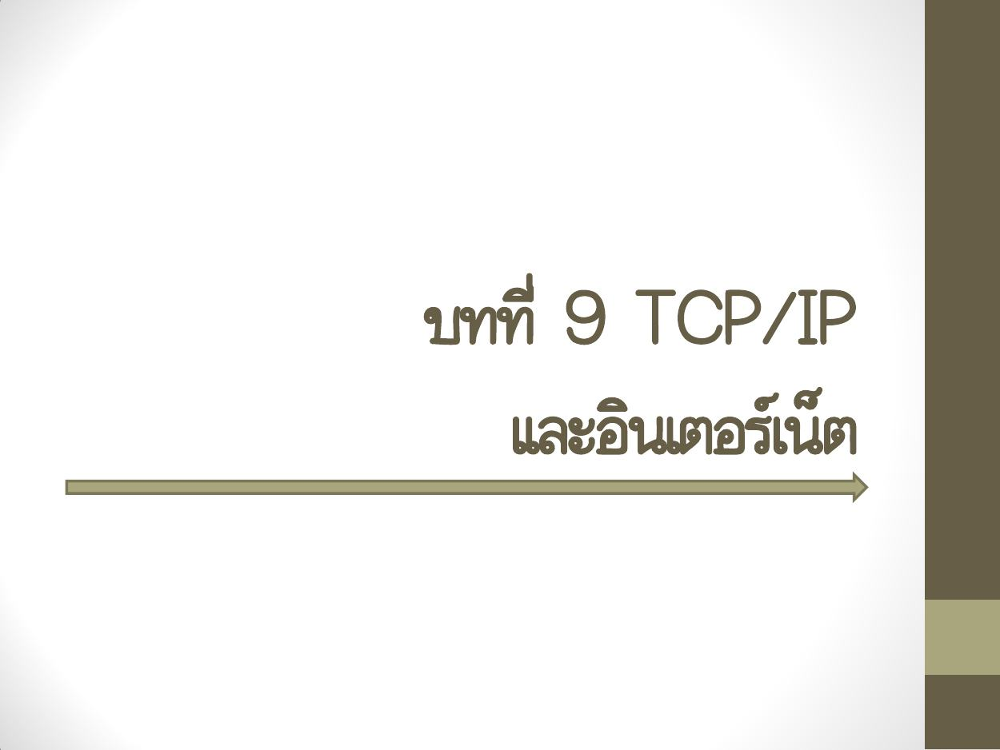
คลิกภาพเพื่อเปิดขยาย
บทที่ 9 TCP/IP และอินเตอร์เน็ต
ทบทวนภาษาไทย: IPv4, IPv6, CIDR และการแบ่ง SubnetIP Datagram, Fragmentation, NAT และ IPv6ARP, DHCP, ICMP และ Multicast Membershipติว Subnetting แบบละเอียด พร้อมแก้ค่าคลาดเคลื่อนในต้นฉบับ
กลับสารบัญ ↑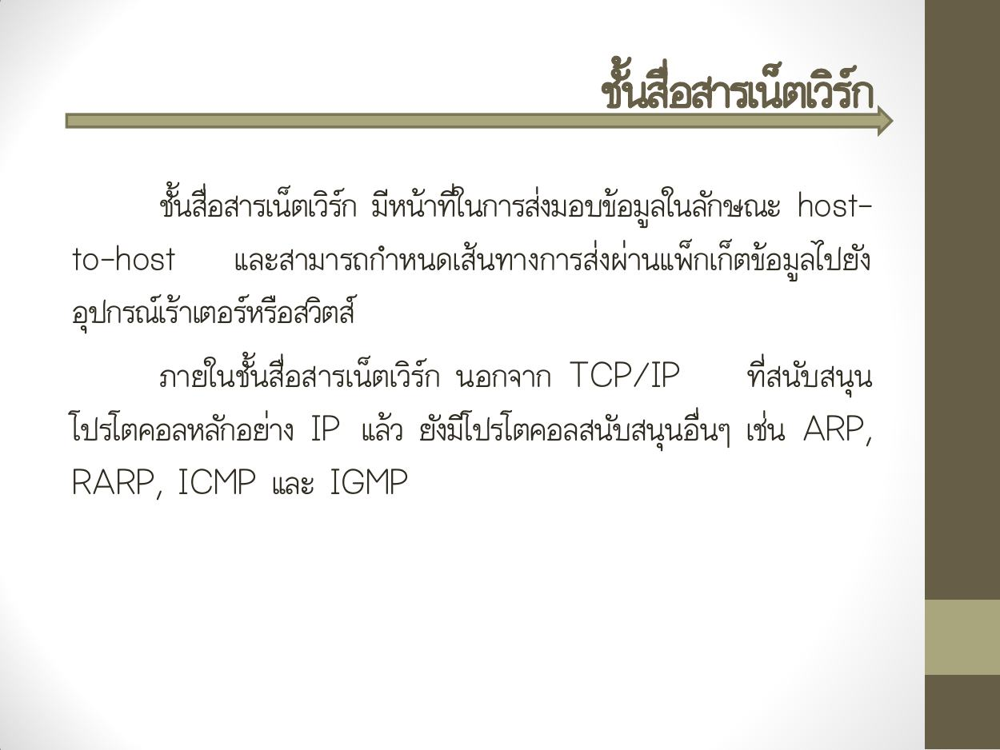
คลิกภาพเพื่อเปิดขยาย
ชั้นสื่อสารเน็ตเวิร์ก
ชั้นสื่อสารเน็ตเวิร์ก มีหน้าที่ในการส่งมอบข้อมูลในลักษณะ host-
to-host และสามารถกาหนดเส้นทางการส่งผ่านแพ็กเก็ตข้อมูลไปยัง
อุปกรณ์เร้าเตอร์หรือสวิตส์
ภายในชั้นสื่อสารเน็ตเวิร์ก นอกจาก TCP/IP ที่สนับสนุน
โปรโตคอลหลักอย่าง IP แล้ว ยังมีโปรโตคอลสนับสนุนอื่นๆ เช่น ARP,
RARP, ICMP และ IGMPทบทวนภาษาไทย: IPv4, IPv6, CIDR และการแบ่ง SubnetIP Datagram, Fragmentation, NAT และ IPv6ARP, DHCP, ICMP และ Multicast Membershipติว Subnetting แบบละเอียด พร้อมแก้ค่าคลาดเคลื่อนในต้นฉบับ
กลับสารบัญ ↑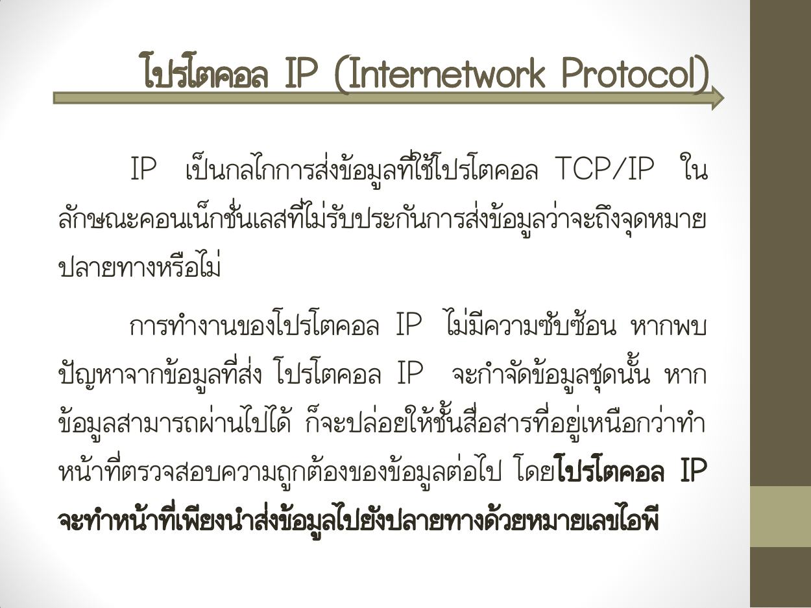
คลิกภาพเพื่อเปิดขยาย
โปรโตคอล IP (Internetwork Protocol)
IP เป็นกลไกการส่งข้อมูลที่ใช้โปรโตคอล TCP/IP ใน
ลักษณะคอนเน็กชั่นเลสที่ไม่รับประกันการส่งข้อมูลว่าจะถึงจุดหมาย
ปลายทางหรือไม่
การทางานของโปรโตคอล IP ไม่มีความซับซ้อน หากพบ
ปัญหาจากข้อมูลที่ส่ง โปรโตคอล IP จะกาจัดข้อมูลชุดนั้น หาก
ข้อมูลสามารถผ่านไปได้ ก็จะปล่อยให้ชั้นสื่อสารที่อยู่เหนือกว่าทา
หน้าที่ตรวจสอบความถูกต้องของข้อมูลต่อไป โดยโปรโตคอล IP
จะทาหน้าที่เพียงนาส่งข้อมูลไปยังปลายทางด้วยหมายเลขไอพีทบทวนภาษาไทย: IPv4, IPv6, CIDR และการแบ่ง SubnetIP Datagram, Fragmentation, NAT และ IPv6ARP, DHCP, ICMP และ Multicast Membershipติว Subnetting แบบละเอียด พร้อมแก้ค่าคลาดเคลื่อนในต้นฉบับ
กลับสารบัญ ↑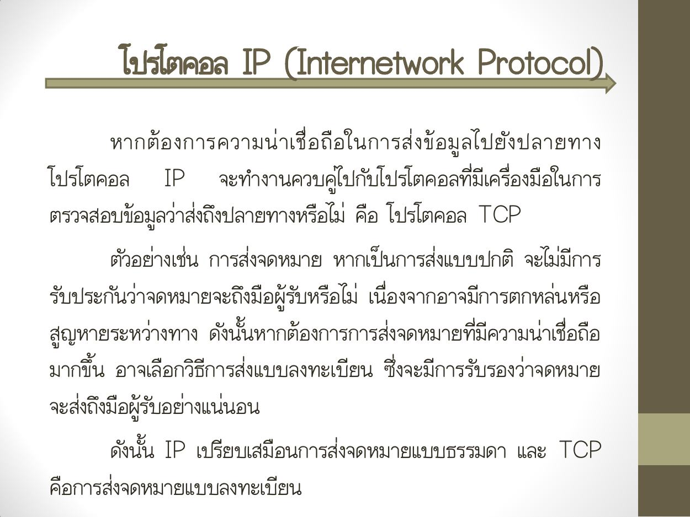
คลิกภาพเพื่อเปิดขยาย
โปรโตคอล IP (Internetwork Protocol)
หากต้ อ งการความน่ า เชื่ อ ถื อ ในการส่ ง ข้ อ มู ล ไปยั ง ปลายทาง
โปรโตคอล IP จะทางานควบคู่ไปกับโปรโตคอลที่มีเครื่องมือในการ
ตรวจสอบข้อมูลว่าส่งถึงปลายทางหรือไม่ คือ โปรโตคอล TCP
ตัวอย่างเช่น การส่งจดหมาย หากเป็นการส่งแบบปกติ จะไม่มีการ
รับประกันว่าจดหมายจะถึงมือผู้รับหรือไม่ เนื่องจากอาจมีการตกหล่นหรือ
สูญหายระหว่างทาง ดังนั้นหากต้องการการส่งจดหมายที่มีความน่าเชื่อถือ
มากขึ้น อาจเลือกวิธีการส่งแบบลงทะเบียน ซึ่งจะมีการรับรองว่าจดหมาย
จะส่งถึงมือผู้รับอย่างแน่นอน
ดังนั้น IP เปรียบเสมือนการส่งจดหมายแบบธรรมดา และ TCP
คือการส่งจดหมายแบบลงทะเบียนทบทวนภาษาไทย: IPv4, IPv6, CIDR และการแบ่ง SubnetIP Datagram, Fragmentation, NAT และ IPv6ARP, DHCP, ICMP และ Multicast Membershipติว Subnetting แบบละเอียด พร้อมแก้ค่าคลาดเคลื่อนในต้นฉบับ
กลับสารบัญ ↑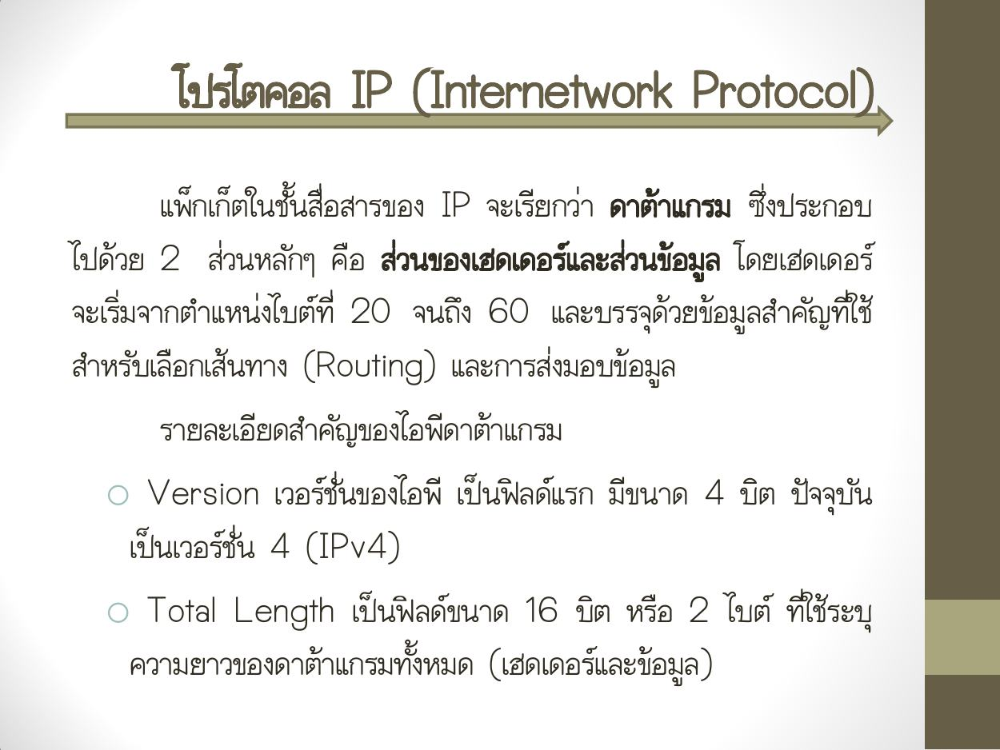
คลิกภาพเพื่อเปิดขยาย
โปรโตคอล IP (Internetwork Protocol)
แพ็กเก็ตในชั้นสื่อสารของ IP จะเรียกว่า ดาต้าแกรม ซึ่งประกอบ
ไปด้วย 2 ส่วนหลักๆ คือ ส่วนของเฮดเดอร์และส่วนข้อมูล โดยเฮดเดอร์
จะเริ่มจากตาแหน่งไบต์ที่ 20 จนถึง 60 และบรรจุด้วยข้อมูลสาคัญที่ใช้
สาหรับเลือกเส้นทาง (Routing) และการส่งมอบข้อมูล
รายละเอียดสาคัญของไอพีดาต้าแกรม
o Version เวอร์ชั่นของไอพี เป็นฟิลด์แรก มีขนาด 4 บิต ปัจจุบัน
เป็นเวอร์ชั่น 4 (IPv4)
o Total Length เป็นฟิลด์ขนาด 16 บิต หรือ 2 ไบต์ ที่ใช้ระบุ
ความยาวของดาต้าแกรมทั้งหมด (เฮดเดอร์และข้อมูล)ทบทวนภาษาไทย: IPv4, IPv6, CIDR และการแบ่ง SubnetIP Datagram, Fragmentation, NAT และ IPv6ARP, DHCP, ICMP และ Multicast Membershipติว Subnetting แบบละเอียด พร้อมแก้ค่าคลาดเคลื่อนในต้นฉบับ
กลับสารบัญ ↑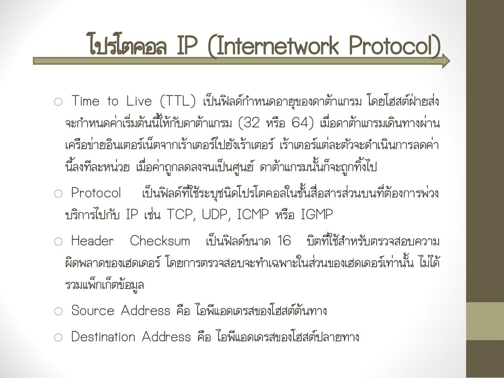
คลิกภาพเพื่อเปิดขยาย
โปรโตคอล IP (Internetwork Protocol) o Time to Live (TTL) เป็นฟิลด์กาหนดอายุของดาต้าแกรม โดยโฮสต์ฝ่ายส่ง จะกาหนดค่าเริ่มต้นนี้ให้กับดาต้าแกรม (32 หรือ 64) เมื่อดาต้าแกรมเดินทางผ่าน เครือข่ายอินเตอร์เน็ตจากเร้าเตอร์ไปยังเร้าเตอร์ เร้าเตอร์แต่ละตัวจะดาเนินการลดค่า นี้ลงทีละหน่วย เมื่อค่าถูกลดลงจนเป็นศูนย์ ดาต้าแกรมนั้นก็จะถูกทิ้งไป o Protocol เป็นฟิลด์ที่ใช้ระบุชนิดโปรโตคอลในชั้นสื่อสารส่วนบนที่ต้องการพ่วง บริการไปกับ IP เช่น TCP, UDP, ICMP หรือ IGMP o Header Checksum เป็นฟิลด์ขนาด 16 บิตที่ใช้สาหรับตรวจสอบความ ผิดพลาดของเฮดเดอร์ โดยการตรวจสอบจะทาเฉพาะในส่วนของเฮดเดอร์เท่านั้น ไม่ได้ รวมแพ็กเก็ตข้อมูล o Source Address คือ ไอพีแอดเดรสของโฮสต์ต้นทาง o Destination Address คือ ไอพีแอดเดรสของโฮสต์ปลายทาง
ทบทวนภาษาไทย: IPv4, IPv6, CIDR และการแบ่ง SubnetIP Datagram, Fragmentation, NAT และ IPv6ARP, DHCP, ICMP และ Multicast Membershipติว Subnetting แบบละเอียด พร้อมแก้ค่าคลาดเคลื่อนในต้นฉบับ
กลับสารบัญ ↑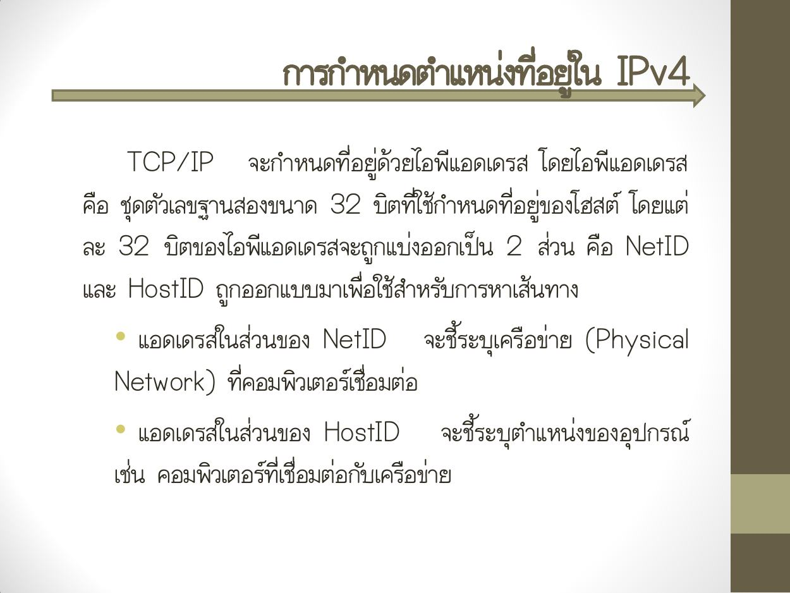
คลิกภาพเพื่อเปิดขยาย
การกาหนดตาแหน่งทีอ่ ยู่ใน IPv4
TCP/IP จะกาหนดที่อยู่ด้วยไอพีแอดเดรส โดยไอพีแอดเดรส
คือ ชุดตัวเลขฐานสองขนาด 32 บิตที่ใช้กาหนดที่อยู่ของโฮสต์ โดยแต่
ละ 32 บิตของไอพีแอดเดรสจะถูกแบ่งออกเป็น 2 ส่วน คือ NetID
และ HostID ถูกออกแบบมาเพื่อใช้สาหรับการหาเส้นทาง
• แอดเดรสในส่วนของ NetID จะชี้ระบุเครือข่าย (Physical
Network) ที่คอมพิวเตอร์เชื่อมต่อ
• แอดเดรสในส่วนของ HostID จะชี้ระบุตาแหน่งของอุปกรณ์
เช่น คอมพิวเตอร์ที่เชื่อมต่อกับเครือข่ายทบทวนภาษาไทย: IPv4, IPv6, CIDR และการแบ่ง SubnetIP Datagram, Fragmentation, NAT และ IPv6ARP, DHCP, ICMP และ Multicast Membershipติว Subnetting แบบละเอียด พร้อมแก้ค่าคลาดเคลื่อนในต้นฉบับ
กลับสารบัญ ↑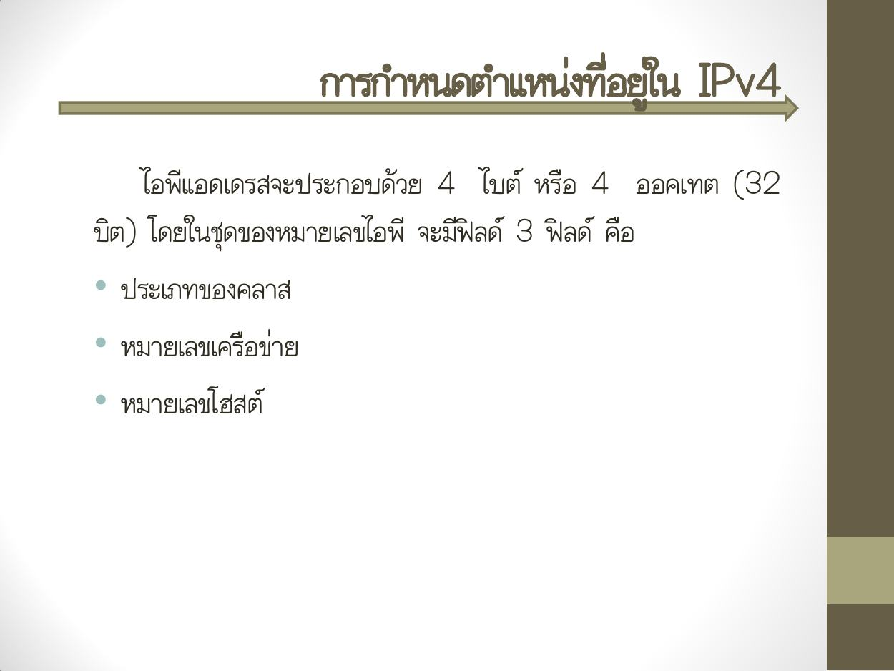
คลิกภาพเพื่อเปิดขยาย
การกาหนดตาแหน่งทีอ่ ยู่ใน IPv4
ไอพีแอดเดรสจะประกอบด้วย 4 ไบต์ หรือ 4 ออคเทต (32
บิต) โดยในชุดของหมายเลขไอพี จะมีฟิลด์ 3 ฟิลด์ คือ
• ประเภทของคลาส
• หมายเลขเครือข่าย
• หมายเลขโฮสต์ทบทวนภาษาไทย: IPv4, IPv6, CIDR และการแบ่ง SubnetIP Datagram, Fragmentation, NAT และ IPv6ARP, DHCP, ICMP และ Multicast Membershipติว Subnetting แบบละเอียด พร้อมแก้ค่าคลาดเคลื่อนในต้นฉบับ
กลับสารบัญ ↑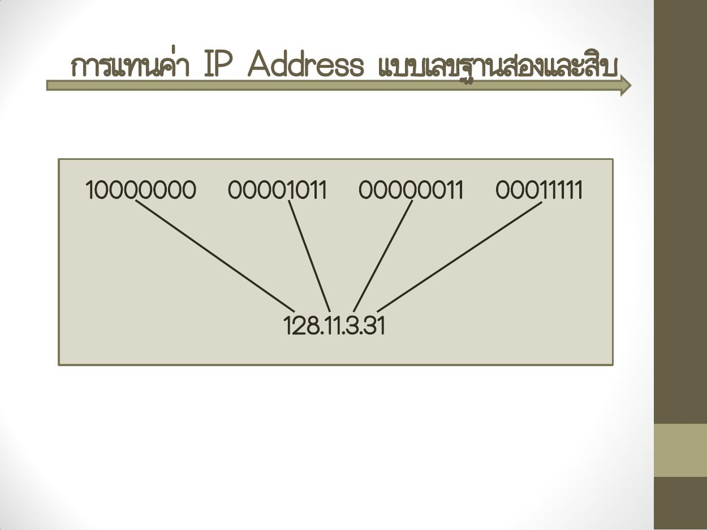
คลิกภาพเพื่อเปิดขยาย
การแทนค่า IP Address แบบเลขฐานสองและสิบ
10000000 00001011 00000011 00011111
128.11.3.31ทบทวนภาษาไทย: IPv4, IPv6, CIDR และการแบ่ง SubnetIP Datagram, Fragmentation, NAT และ IPv6ARP, DHCP, ICMP และ Multicast Membershipติว Subnetting แบบละเอียด พร้อมแก้ค่าคลาดเคลื่อนในต้นฉบับ
กลับสารบัญ ↑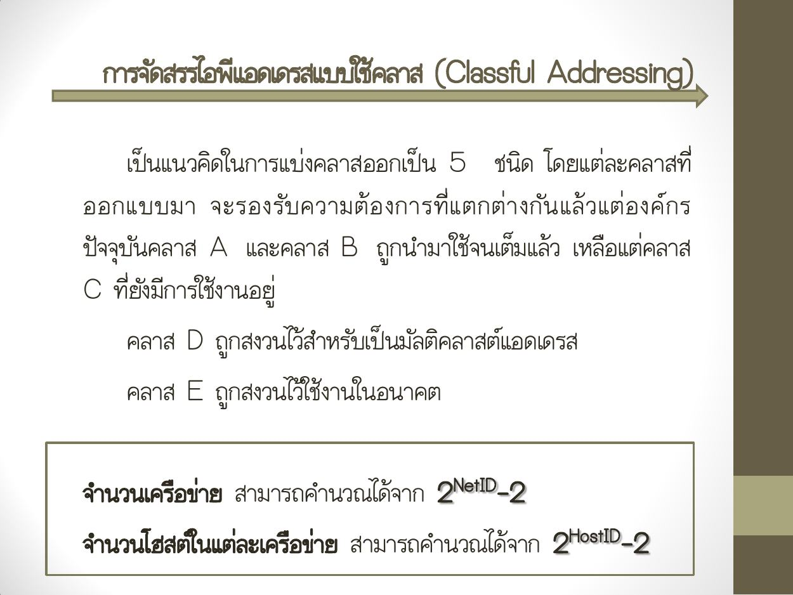
คลิกภาพเพื่อเปิดขยาย
การจัดสรรไอพีแอดเดรสแบบใช้คลาส (Classful Addressing)
เป็นแนวคิดในการแบ่งคลาสออกเป็น 5 ชนิด โดยแต่ละคลาสที่
ออกแบบมา จะรองรั บ ความต้ อ งการที่ แ ตกต่ า งกั น แล้ ว แต่ อ งค์ ก ร
ปัจจุบันคลาส A และคลาส B ถูกนามาใช้จนเต็มแล้ว เหลือแต่คลาส
C ที่ยังมีการใช้งานอยู่
คลาส D ถูกสงวนไว้สาหรับเป็นมัลติคลาสต์แอดเดรส
คลาส E ถูกสงวนไว้ใช้งานในอนาคต
จานวนเครือข่าย สามารถคานวณได้จาก 2NetID-2
จานวนโฮสต์ในแต่ละเครือข่าย สามารถคานวณได้จาก 2HostID-2ทบทวนภาษาไทย: IPv4, IPv6, CIDR และการแบ่ง SubnetIP Datagram, Fragmentation, NAT และ IPv6ARP, DHCP, ICMP และ Multicast Membershipติว Subnetting แบบละเอียด พร้อมแก้ค่าคลาดเคลื่อนในต้นฉบับ
กลับสารบัญ ↑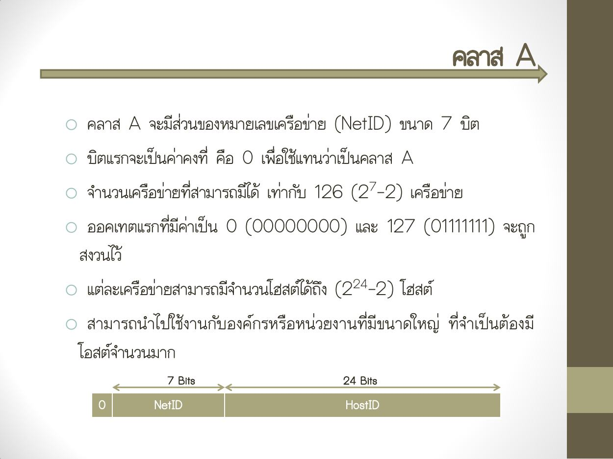
คลิกภาพเพื่อเปิดขยาย
คลาส A
o คลาส A จะมีส่วนของหมายเลขเครือข่าย (NetID) ขนาด 7 บิต
o บิตแรกจะเป็นค่าคงที่ คือ 0 เพื่อใช้แทนว่าเป็นคลาส A
o จานวนเครือข่ายที่สามารถมีได้ เท่ากับ 126 (27-2) เครือข่าย
o ออคเทตแรกที่มีค่าเป็น 0 (00000000) และ 127 (01111111) จะถูก
สงวนไว้
o แต่ละเครือข่ายสามารถมีจานวนโฮสต์ได้ถึง (224-2) โฮสต์
o สามารถนาไปใช้งานกับองค์กรหรือหน่วยงานที่มีขนาดใหญ่ ที่จาเป็นต้องมี
โอสต์จานวนมาก
7 Bits 24 Bits
0 NetID HostIDทบทวนภาษาไทย: IPv4, IPv6, CIDR และการแบ่ง SubnetIP Datagram, Fragmentation, NAT และ IPv6ARP, DHCP, ICMP และ Multicast Membershipติว Subnetting แบบละเอียด พร้อมแก้ค่าคลาดเคลื่อนในต้นฉบับ
กลับสารบัญ ↑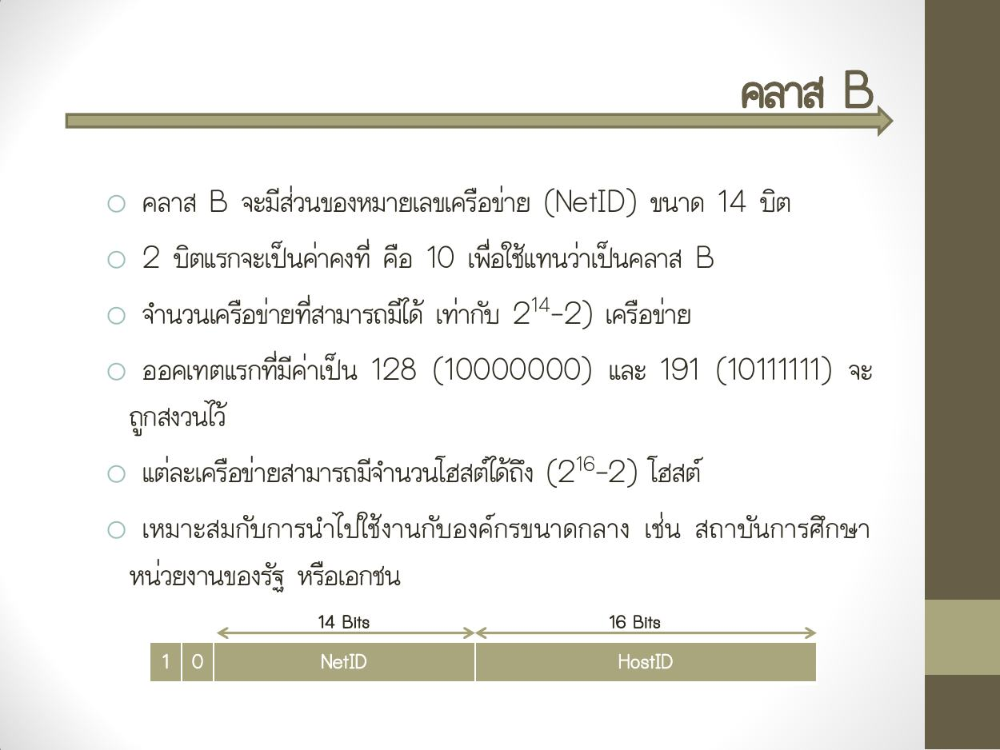
คลิกภาพเพื่อเปิดขยาย
คลาส B
o คลาส B จะมีส่วนของหมายเลขเครือข่าย (NetID) ขนาด 14 บิต
o 2 บิตแรกจะเป็นค่าคงที่ คือ 10 เพื่อใช้แทนว่าเป็นคลาส B
o จานวนเครือข่ายที่สามารถมีได้ เท่ากับ 214-2) เครือข่าย
o ออคเทตแรกที่มีค่าเป็น 128 (10000000) และ 191 (10111111) จะ
ถูกสงวนไว้
o แต่ละเครือข่ายสามารถมีจานวนโฮสต์ได้ถึง (216-2) โฮสต์
o เหมาะสมกับการนาไปใช้งานกับองค์กรขนาดกลาง เช่น สถาบันการศึกษา
หน่วยงานของรัฐ หรือเอกชน
14 Bits 16 Bits
1 0 NetID HostIDทบทวนภาษาไทย: IPv4, IPv6, CIDR และการแบ่ง SubnetIP Datagram, Fragmentation, NAT และ IPv6ARP, DHCP, ICMP และ Multicast Membershipติว Subnetting แบบละเอียด พร้อมแก้ค่าคลาดเคลื่อนในต้นฉบับ
กลับสารบัญ ↑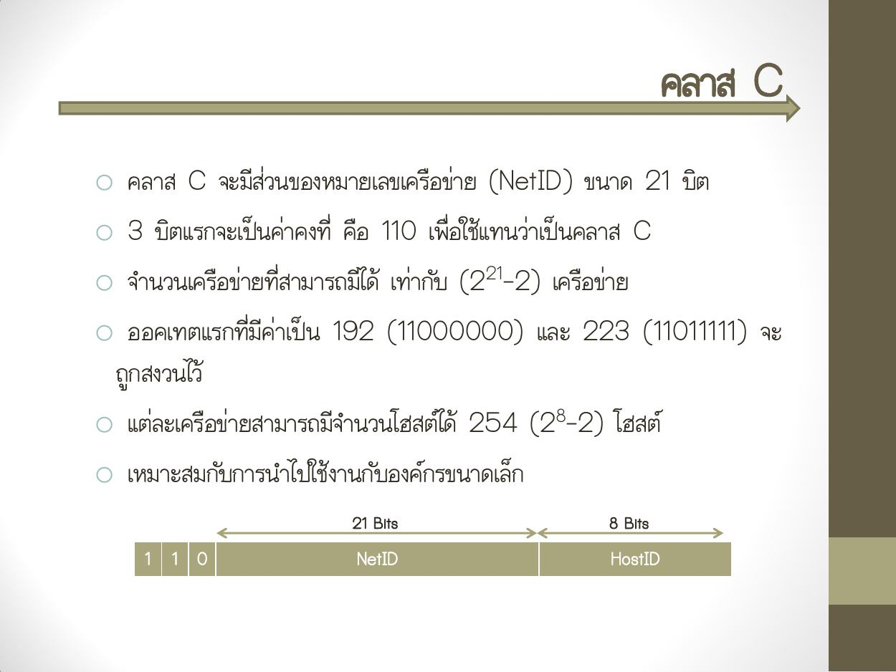
คลิกภาพเพื่อเปิดขยาย
คลาส C
o คลาส C จะมีส่วนของหมายเลขเครือข่าย (NetID) ขนาด 21 บิต
o 3 บิตแรกจะเป็นค่าคงที่ คือ 110 เพื่อใช้แทนว่าเป็นคลาส C
o จานวนเครือข่ายที่สามารถมีได้ เท่ากับ (221-2) เครือข่าย
o ออคเทตแรกที่มีค่าเป็น 192 (11000000) และ 223 (11011111) จะ
ถูกสงวนไว้
o แต่ละเครือข่ายสามารถมีจานวนโฮสต์ได้ 254 (28-2) โฮสต์
o เหมาะสมกับการนาไปใช้งานกับองค์กรขนาดเล็ก
21 Bits 8 Bits
1 1 0 NetID HostIDทบทวนภาษาไทย: IPv4, IPv6, CIDR และการแบ่ง SubnetIP Datagram, Fragmentation, NAT และ IPv6ARP, DHCP, ICMP และ Multicast Membershipติว Subnetting แบบละเอียด พร้อมแก้ค่าคลาดเคลื่อนในต้นฉบับ
กลับสารบัญ ↑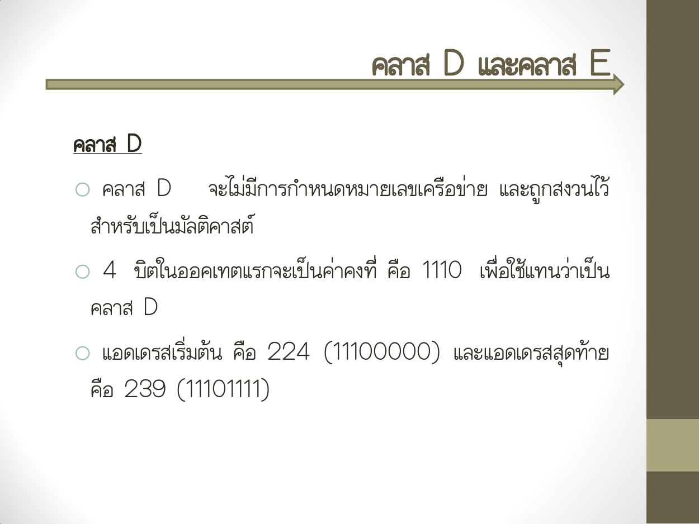
คลิกภาพเพื่อเปิดขยาย
คลาส D และคลาส E คลาส D o คลาส D จะไม่มีการกาหนดหมายเลขเครือข่าย และถูกสงวนไว้ สาหรับเป็นมัลติคาสต์ o 4 บิตในออคเทตแรกจะเป็นค่าคงที่ คือ 1110 เพื่อใช้แทนว่าเป็น คลาส D o แอดเดรสเริ่มต้น คือ 224 (11100000) และแอดเดรสสุดท้าย คือ 239 (11101111)
ทบทวนภาษาไทย: IPv4, IPv6, CIDR และการแบ่ง SubnetIP Datagram, Fragmentation, NAT และ IPv6ARP, DHCP, ICMP และ Multicast Membershipติว Subnetting แบบละเอียด พร้อมแก้ค่าคลาดเคลื่อนในต้นฉบับ
กลับสารบัญ ↑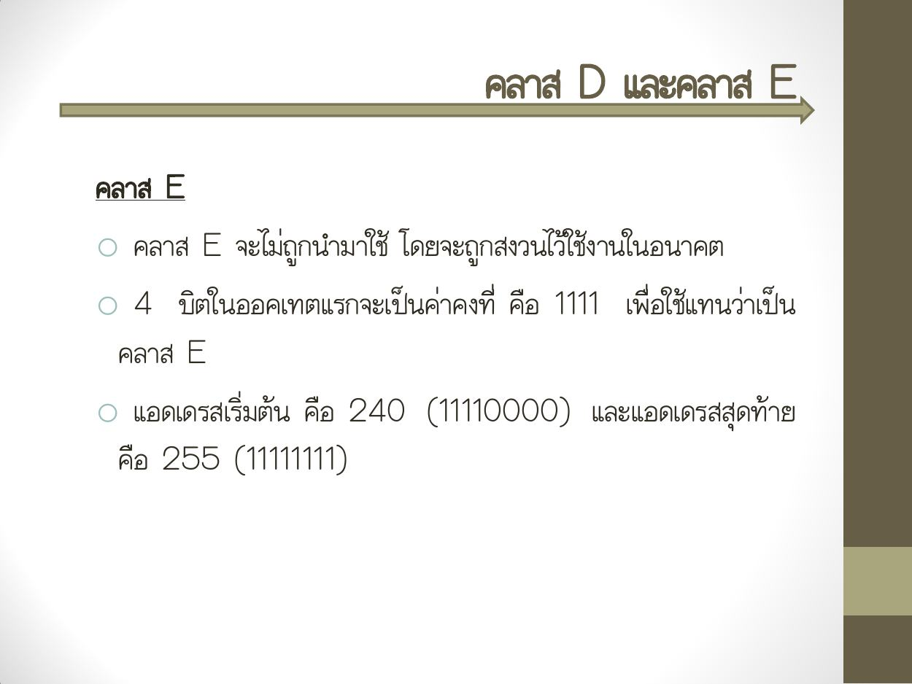
คลิกภาพเพื่อเปิดขยาย
คลาส D และคลาส E คลาส E o คลาส E จะไม่ถูกนามาใช้ โดยจะถูกสงวนไว้ใช้งานในอนาคต o 4 บิตในออคเทตแรกจะเป็นค่าคงที่ คือ 1111 เพื่อใช้แทนว่าเป็น คลาส E o แอดเดรสเริ่มต้น คือ 240 (11110000) และแอดเดรสสุดท้าย คือ 255 (11111111)
ทบทวนภาษาไทย: IPv4, IPv6, CIDR และการแบ่ง SubnetIP Datagram, Fragmentation, NAT และ IPv6ARP, DHCP, ICMP และ Multicast Membershipติว Subnetting แบบละเอียด พร้อมแก้ค่าคลาดเคลื่อนในต้นฉบับ
กลับสารบัญ ↑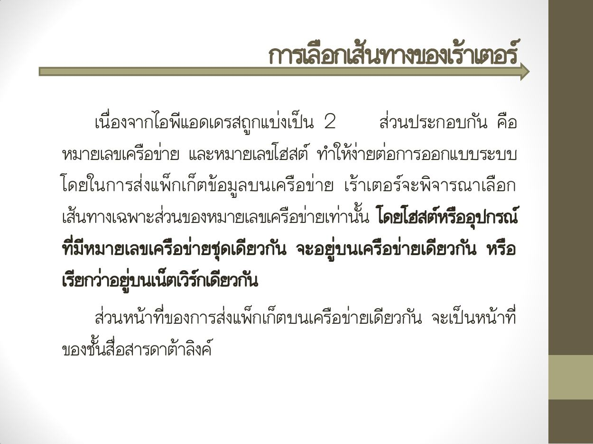
คลิกภาพเพื่อเปิดขยาย
การเลือกเส้นทางของเร้าเตอร์
เนื่องจากไอพีแอดเดรสถูกแบ่งเป็น 2 ส่วนประกอบกัน คือ
หมายเลขเครือข่าย และหมายเลขโฮสต์ ทาให้ง่ายต่อการออกแบบระบบ
โดยในการส่ ง แพ็กเก็ตข้ อ มู ลบนเครือ ข่ าย เร้าเตอร์จะพิ จารณาเลือ ก
เส้นทางเฉพาะส่วนของหมายเลขเครือข่ายเท่านั้น โดยโฮสต์หรืออุปกรณ์
ที่มีหมายเลขเครือข่ายชุดเดียวกัน จะอยู่บนเครือข่ายเดียวกัน หรือ
เรียกว่าอยู่บนเน็ตเวิร์กเดียวกัน
ส่วนหน้าที่ของการส่งแพ็กเก็ตบนเครือข่ายเดียวกัน จะเป็นหน้าที่
ของชั้นสื่อสารดาต้าลิงค์ทบทวนภาษาไทย: IPv4, IPv6, CIDR และการแบ่ง SubnetIP Datagram, Fragmentation, NAT และ IPv6ARP, DHCP, ICMP และ Multicast Membershipติว Subnetting แบบละเอียด พร้อมแก้ค่าคลาดเคลื่อนในต้นฉบับ
กลับสารบัญ ↑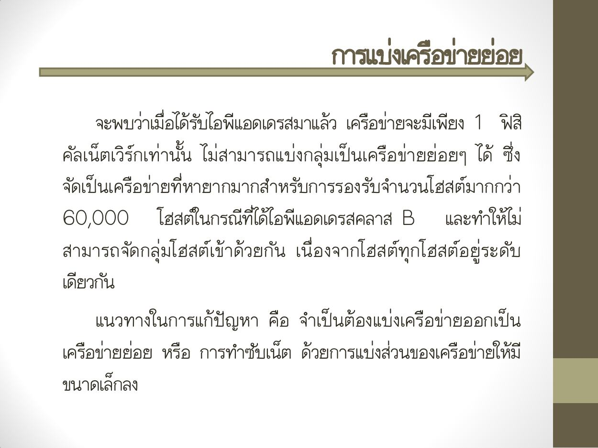
คลิกภาพเพื่อเปิดขยาย
การแบ่งเครือข่ายย่อย
จะพบว่าเมื่อได้รับไอพีแอดเดรสมาแล้ว เครือข่ายจะมีเพียง 1 ฟิสิ
คัลเน็ ตเวิร์กเท่ านั้น ไม่ ส ามารถแบ่ ง กลุ่ม เป็น เครือ ข่ า ยย่อ ยๆ ได้ ซึ่ ง
จัดเป็นเครือข่ายที่หายากมากสาหรับการรองรับจานวนโฮสต์มากกว่า
60,000 โฮสต์ในกรณีที่ได้ไอพีแอดเดรสคลาส B และทาให้ไม่
สามารถจั ด กลุ่ ม โฮสต์ เ ข้ า ด้ ว ยกั น เนื่ อ งจากโฮสต์ ทุ ก โฮสต์ อ ยู่ ร ะดั บ
เดียวกัน
แนวทางในการแก้ปัญหา คือ จาเป็นต้องแบ่งเครือข่ายออกเป็น
เครือข่ายย่อย หรือ การทาซับเน็ต ด้วยการแบ่งส่วนของเครือข่ายให้มี
ขนาดเล็กลงทบทวนภาษาไทย: IPv4, IPv6, CIDR และการแบ่ง SubnetIP Datagram, Fragmentation, NAT และ IPv6ARP, DHCP, ICMP และ Multicast Membershipติว Subnetting แบบละเอียด พร้อมแก้ค่าคลาดเคลื่อนในต้นฉบับ
กลับสารบัญ ↑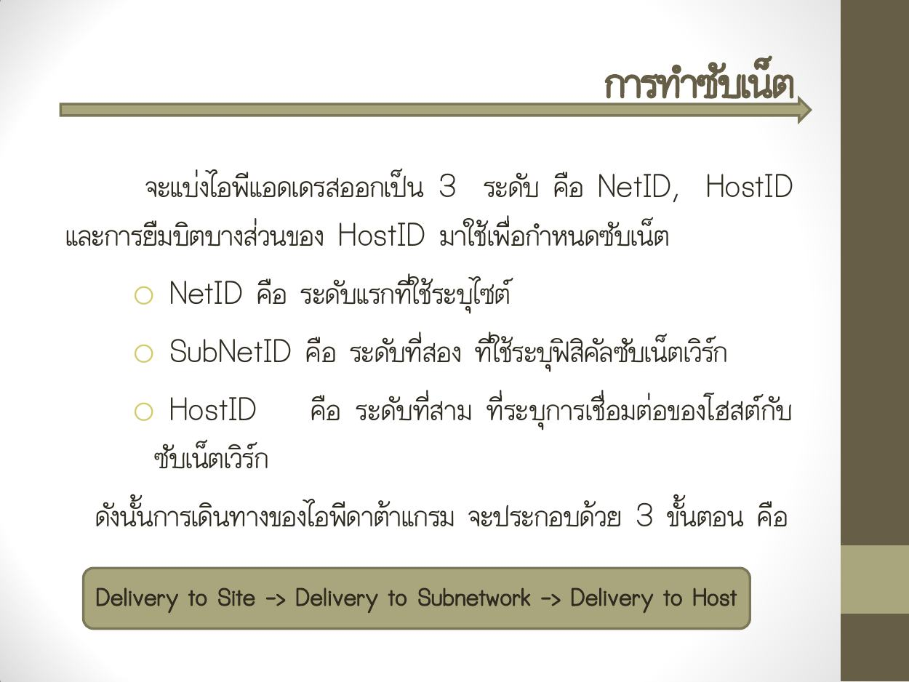
คลิกภาพเพื่อเปิดขยาย
การทาซับเน็ต
จะแบ่งไอพีแอดเดรสออกเป็น 3 ระดับ คือ NetID, HostID
และการยืมบิตบางส่วนของ HostID มาใช้เพื่อกาหนดซับเน็ต
o NetID คือ ระดับแรกที่ใช้ระบุไซต์
o SubNetID คือ ระดับที่สอง ที่ใช้ระบุฟิสิคัลซับเน็ตเวิร์ก
o HostID คือ ระดับที่สาม ที่ระบุการเชื่อมต่อของโฮสต์กับ
ซับเน็ตเวิร์ก
ดังนั้นการเดินทางของไอพีดาต้าแกรม จะประกอบด้วย 3 ขั้นตอน คือ
Delivery to Site -> Delivery to Subnetwork -> Delivery to Hostทบทวนภาษาไทย: IPv4, IPv6, CIDR และการแบ่ง SubnetIP Datagram, Fragmentation, NAT และ IPv6ARP, DHCP, ICMP และ Multicast Membershipติว Subnetting แบบละเอียด พร้อมแก้ค่าคลาดเคลื่อนในต้นฉบับ
กลับสารบัญ ↑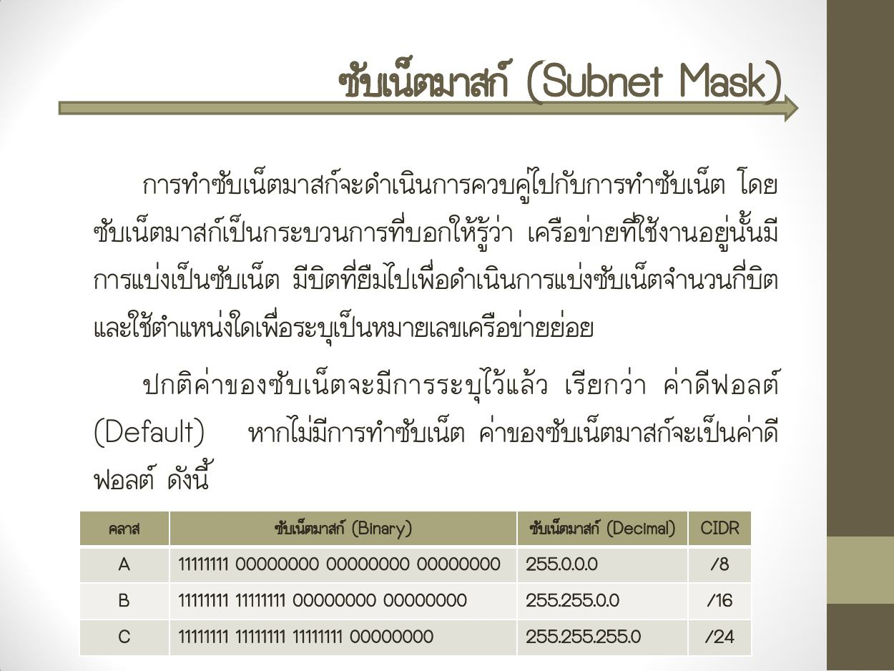
คลิกภาพเพื่อเปิดขยาย
ซับเน็ตมาสก์ (Subnet Mask)
การทาซับเน็ตมาสก์จะดาเนินการควบคู่ไปกับการทาซับเน็ต โดย
ซับเน็ตมาสก์เป็นกระบวนการที่บอกให้รู้ว่า เครือข่ายที่ใช้งานอยู่นั้นมี
การแบ่งเป็นซับเน็ต มีบิตที่ยืมไปเพื่อดาเนินการแบ่งซับเน็ตจานวนกี่บิต
และใช้ตาแหน่งใดเพื่อระบุเป็นหมายเลขเครือข่ายย่อย
ปกติ ค่ า ของซั บ เน็ ต จะมี ก ารระบุ ไ ว้ แ ล้ ว เรี ย กว่ า ค่ า ดี ฟ อลต์
(Default) หากไม่มีการทาซับเน็ต ค่าของซับเน็ตมาสก์จะเป็นค่าดี
ฟอลต์ ดังนี้
คลาส ซับเน็ตมาสก์ (Binary) ซับเน็ตมาสก์ (Decimal) CIDR
A 11111111 00000000 00000000 00000000 255.0.0.0 /8
B 11111111 11111111 00000000 00000000 255.255.0.0 /16
C 11111111 11111111 11111111 00000000 255.255.255.0 /24ทบทวนภาษาไทย: IPv4, IPv6, CIDR และการแบ่ง SubnetIP Datagram, Fragmentation, NAT และ IPv6ARP, DHCP, ICMP และ Multicast Membershipติว Subnetting แบบละเอียด พร้อมแก้ค่าคลาดเคลื่อนในต้นฉบับ
กลับสารบัญ ↑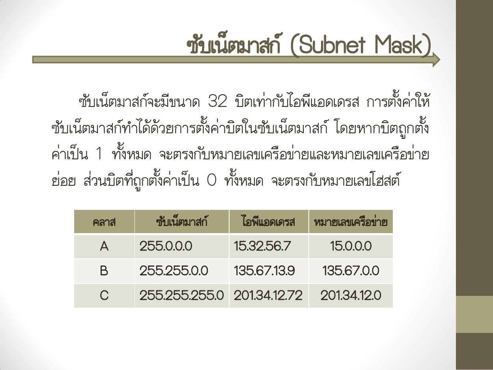
คลิกภาพเพื่อเปิดขยาย
ซับเน็ตมาสก์ (Subnet Mask)
ซับเน็ตมาสก์จะมีขนาด 32 บิตเท่ากับไอพีแอดเดรส การตั้งค่าให้
ซับเน็ตมาสก์ทาได้ด้วยการตั้งค่าบิตในซับเน็ตมาสก์ โดยหากบิตถูกตั้ง
ค่าเป็น 1 ทั้งหมด จะตรงกับหมายเลขเครือข่ายและหมายเลขเครือข่าย
ย่อย ส่วนบิตที่ถูกตั้งค่าเป็น 0 ทั้งหมด จะตรงกับหมายเลขโฮสต์
คลาส ซับเน็ตมาสก์ ไอพีแอดเดรส หมายเลขเครือข่าย
A 255.0.0.0 15.32.56.7 15.0.0.0
B 255.255.0.0 135.67.13.9 135.67.0.0
C 255.255.255.0 201.34.12.72 201.34.12.0ทบทวนภาษาไทย: IPv4, IPv6, CIDR และการแบ่ง SubnetIP Datagram, Fragmentation, NAT และ IPv6ARP, DHCP, ICMP และ Multicast Membershipติว Subnetting แบบละเอียด พร้อมแก้ค่าคลาดเคลื่อนในต้นฉบับ
กลับสารบัญ ↑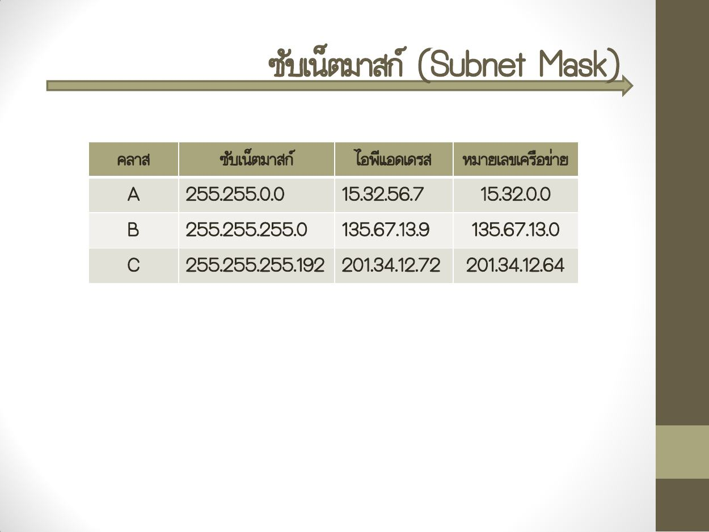
คลิกภาพเพื่อเปิดขยาย
ซับเน็ตมาสก์ (Subnet Mask) คลาส ซับเน็ตมาสก์ ไอพีแอดเดรส หมายเลขเครือข่าย A 255.255.0.0 15.32.56.7 15.32.0.0 B 255.255.255.0 135.67.13.9 135.67.13.0 C 255.255.255.192 201.34.12.72 201.34.12.64
ทบทวนภาษาไทย: IPv4, IPv6, CIDR และการแบ่ง SubnetIP Datagram, Fragmentation, NAT และ IPv6ARP, DHCP, ICMP และ Multicast Membershipติว Subnetting แบบละเอียด พร้อมแก้ค่าคลาดเคลื่อนในต้นฉบับ
กลับสารบัญ ↑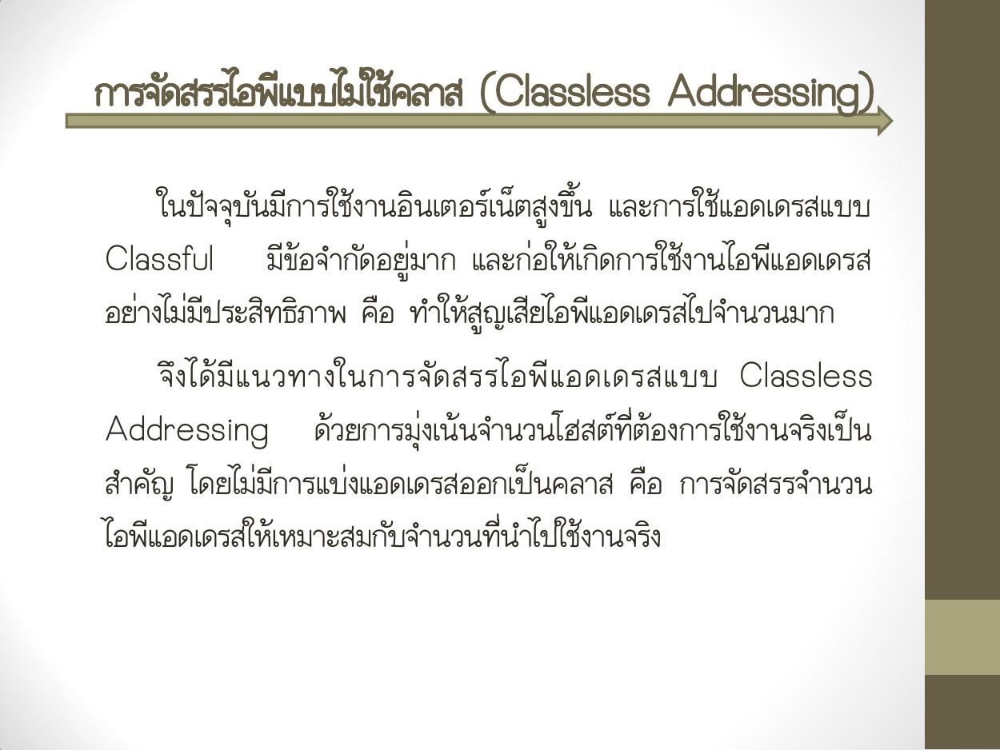
คลิกภาพเพื่อเปิดขยาย
การจัดสรรไอพีแบบไม่ใช้คลาส (Classless Addressing)
ในปัจจุบันมีการใช้งานอินเตอร์เน็ตสูงขึ้น และการใช้แอดเดรสแบบ
Classful มีข้อจากัดอยู่มาก และก่อให้เกิดการใช้งานไอพีแอดเดรส
อย่างไม่มีประสิทธิภาพ คือ ทาให้สูญเสียไอพีแอดเดรสไปจานวนมาก
จึ ง ได้ มี แ นวทางในการจั ด สรรไอพี แ อดเดรสแบบ Classless
Addressing ด้วยการมุ่งเน้นจานวนโฮสต์ที่ต้องการใช้งานจริงเป็น
สาคัญ โดยไม่มีการแบ่งแอดเดรสออกเป็นคลาส คือ การจัดสรรจานวน
ไอพีแอดเดรสให้เหมาะสมกับจานวนที่นาไปใช้งานจริงทบทวนภาษาไทย: IPv4, IPv6, CIDR และการแบ่ง SubnetIP Datagram, Fragmentation, NAT และ IPv6ARP, DHCP, ICMP และ Multicast Membershipติว Subnetting แบบละเอียด พร้อมแก้ค่าคลาดเคลื่อนในต้นฉบับ
กลับสารบัญ ↑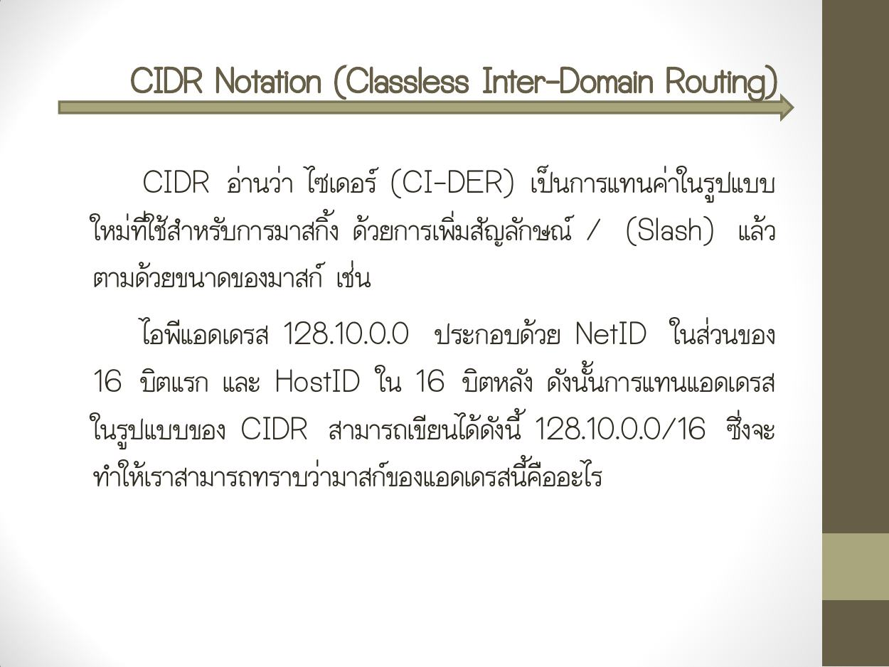
คลิกภาพเพื่อเปิดขยาย
CIDR Notation (Classless Inter-Domain Routing)
CIDR อ่านว่า ไซเดอร์ (CI-DER) เป็นการแทนค่าในรูปแบบ
ใหม่ที่ใช้สาหรับการมาสกิ้ง ด้วยการเพิ่มสัญลักษณ์ / (Slash) แล้ว
ตามด้วยขนาดของมาสก์ เช่น
ไอพีแอดเดรส 128.10.0.0 ประกอบด้วย NetID ในส่วนของ
16 บิตแรก และ HostID ใน 16 บิตหลัง ดังนั้นการแทนแอดเดรส
ในรูปแบบของ CIDR สามารถเขียนได้ดังนี้ 128.10.0.0/16 ซึ่งจะ
ทาให้เราสามารถทราบว่ามาสก์ของแอดเดรสนี้คืออะไรทบทวนภาษาไทย: IPv4, IPv6, CIDR และการแบ่ง SubnetIP Datagram, Fragmentation, NAT และ IPv6ARP, DHCP, ICMP และ Multicast Membershipติว Subnetting แบบละเอียด พร้อมแก้ค่าคลาดเคลื่อนในต้นฉบับ
กลับสารบัญ ↑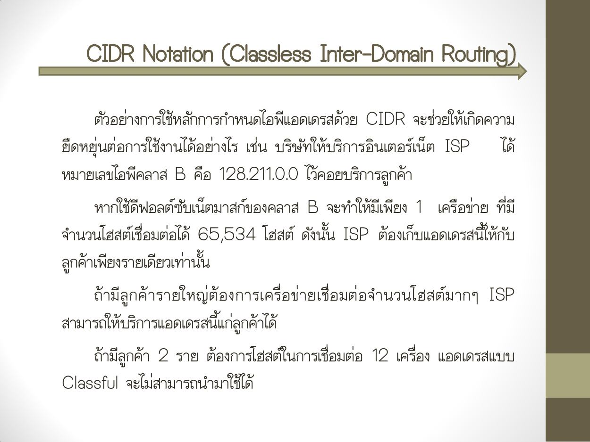
คลิกภาพเพื่อเปิดขยาย
CIDR Notation (Classless Inter-Domain Routing)
ตัวอย่างการใช้หลักการกาหนดไอพีแอดเดรสด้วย CIDR จะช่วยให้เกิดความ
ยืดหยุ่นต่อการใช้งานได้อย่างไร เช่น บริษัทให้บริการอินเตอร์เน็ต ISP ได้
หมายเลขไอพีคลาส B คือ 128.211.0.0 ไว้คอยบริการลูกค้า
หากใช้ดีฟอลต์ซับเน็ตมาสก์ของคลาส B จะทาให้มีเพียง 1 เครือข่าย ที่มี
จานวนโฮสต์เชื่อมต่อได้ 65,534 โฮสต์ ดังนั้น ISP ต้องเก็บแอดเดรสนี้ให้กับ
ลูกค้าเพียงรายเดียวเท่านั้น
ถ้ า มี ลู ก ค้ า รายใหญ่ ต้ อ งการเครื่ อ ข่ า ยเชื่ อ มต่ อ จ านวนโฮสต์ ม ากๆ ISP
สามารถให้บริการแอดเดรสนี้แก่ลูกค้าได้
ถ้ามีลูกค้า 2 ราย ต้องการโฮสต์ในการเชื่อมต่อ 12 เครื่อง แอดเดรสแบบ
Classful จะไม่สามารถนามาใช้ได้ทบทวนภาษาไทย: IPv4, IPv6, CIDR และการแบ่ง SubnetIP Datagram, Fragmentation, NAT และ IPv6ARP, DHCP, ICMP และ Multicast Membershipติว Subnetting แบบละเอียด พร้อมแก้ค่าคลาดเคลื่อนในต้นฉบับ
กลับสารบัญ ↑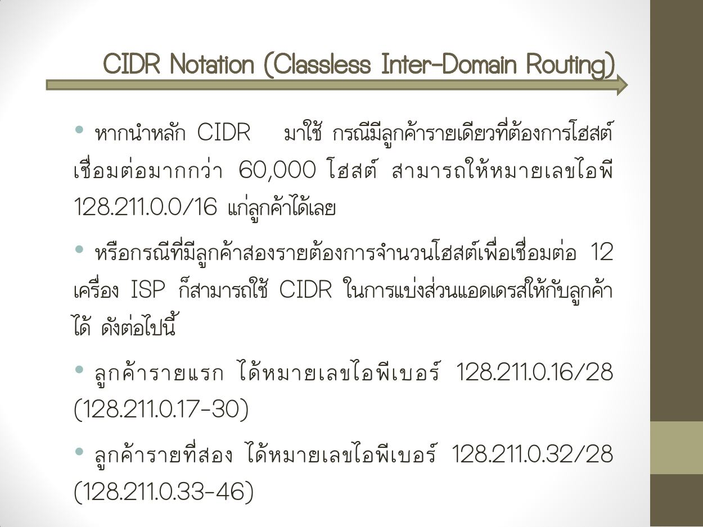
คลิกภาพเพื่อเปิดขยาย
CIDR Notation (Classless Inter-Domain Routing) • หากนาหลัก CIDR มาใช้ กรณีมีลูกค้ารายเดียวที่ต้องการโฮสต์ เชื่ อ มต่ อ มากกว่ า 60,000 โฮสต์ สามารถให้ ห มายเลขไอพี 128.211.0.0/16 แก่ลูกค้าได้เลย • หรือกรณี ที่มี ลูกค้าสองรายต้อ งการจานวนโฮสต์เ พื่ อเชื่อมต่อ 12 เครื่อง ISP ก็สามารถใช้ CIDR ในการแบ่งส่วนแอดเดรสให้กับลูกค้า ได้ ดังต่อไปนี้ • ลู ก ค้ า รายแรก ได้ ห มายเลขไอพี เ บอร์ 128.211.0.16/28 (128.211.0.17-30) • ลู ก ค้ า รายที่ ส อง ได้ ห มายเลขไอพี เ บอร์ 128.211.0.32/28 (128.211.0.33-46)
ทบทวนภาษาไทย: IPv4, IPv6, CIDR และการแบ่ง SubnetIP Datagram, Fragmentation, NAT และ IPv6ARP, DHCP, ICMP และ Multicast Membershipติว Subnetting แบบละเอียด พร้อมแก้ค่าคลาดเคลื่อนในต้นฉบับ
กลับสารบัญ ↑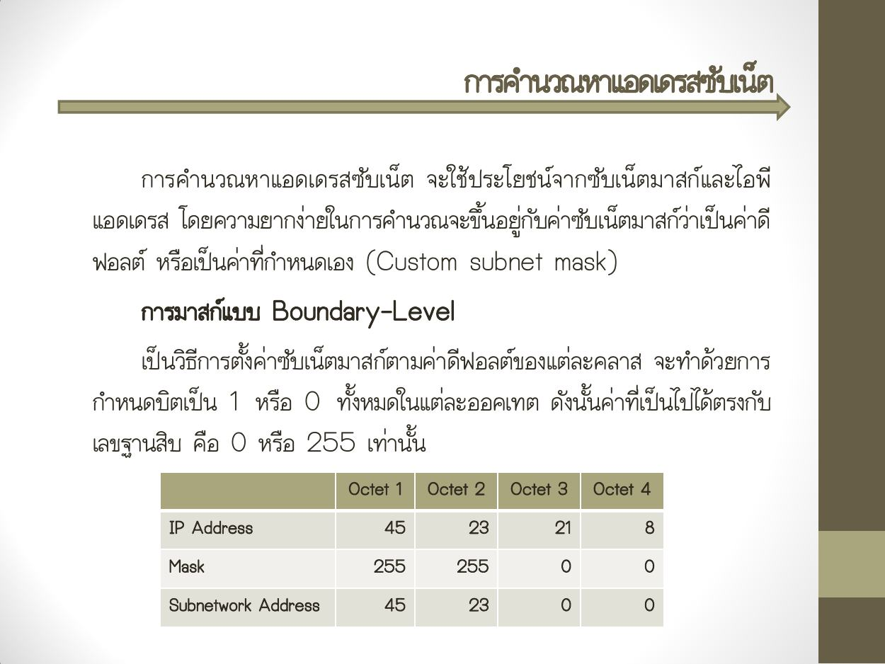
คลิกภาพเพื่อเปิดขยาย
การคานวณหาแอดเดรสซับเน็ต
การคานวณหาแอดเดรสซับเน็ต จะใช้ประโยชน์จากซับเน็ตมาสก์และไอพี
แอดเดรส โดยความยากง่ายในการคานวณจะขึ้นอยู่กับค่าซับเน็ตมาสก์ว่าเป็นค่าดี
ฟอลต์ หรือเป็นค่าที่กาหนดเอง (Custom subnet mask)
การมาสก์แบบ Boundary-Level
เป็นวิธีการตั้งค่าซับเน็ตมาสก์ตามค่าดีฟอลต์ของแต่ละคลาส จะทาด้วยการ
กาหนดบิตเป็น 1 หรือ 0 ทั้งหมดในแต่ละออคเทต ดังนั้นค่าที่เป็นไปได้ตรงกับ
เลขฐานสิบ คือ 0 หรือ 255 เท่านั้น
Octet 1 Octet 2 Octet 3 Octet 4
IP Address 45 23 21 8
Mask 255 255 0 0
Subnetwork Address 45 23 0 0ทบทวนภาษาไทย: IPv4, IPv6, CIDR และการแบ่ง SubnetIP Datagram, Fragmentation, NAT และ IPv6ARP, DHCP, ICMP และ Multicast Membershipติว Subnetting แบบละเอียด พร้อมแก้ค่าคลาดเคลื่อนในต้นฉบับ
กลับสารบัญ ↑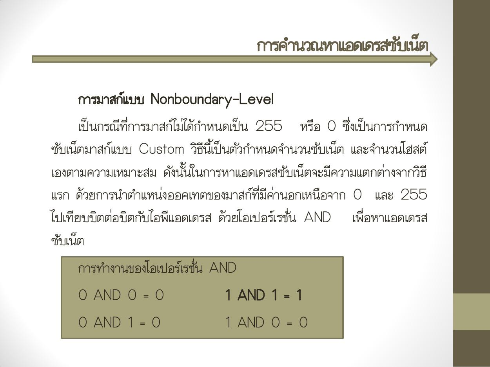
คลิกภาพเพื่อเปิดขยาย
การคานวณหาแอดเดรสซับเน็ต
การมาสก์แบบ Nonboundary-Level
เป็นกรณีที่การมาสก์ไม่ได้กาหนดเป็น 255 หรือ 0 ซึ่งเป็นการกาหนด
ซับเน็ตมาสก์แบบ Custom วิธีนี้เป็นตัวกาหนดจานวนซับเน็ต และจานวนโฮสต์
เองตามความเหมาะสม ดังนั้นในการหาแอดเดรสซับเน็ตจะมีความแตกต่างจากวิธี
แรก ด้วยการนาตาแหน่งออคเทตของมาสก์ที่มีค่านอกเหนือจาก 0 และ 255
ไปเทียบบิตต่อบิตกับไอพีแอดเดรส ด้วยโอเปอร์เรชั่น AND เพื่อหาแอดเดรส
ซับเน็ต
การทางานของโอเปอร์เรชั่น AND
0 AND 0 = 0 1 AND 1 = 1
0 AND 1 = 0 1 AND 0 = 0ทบทวนภาษาไทย: IPv4, IPv6, CIDR และการแบ่ง SubnetIP Datagram, Fragmentation, NAT และ IPv6ARP, DHCP, ICMP และ Multicast Membershipติว Subnetting แบบละเอียด พร้อมแก้ค่าคลาดเคลื่อนในต้นฉบับ
กลับสารบัญ ↑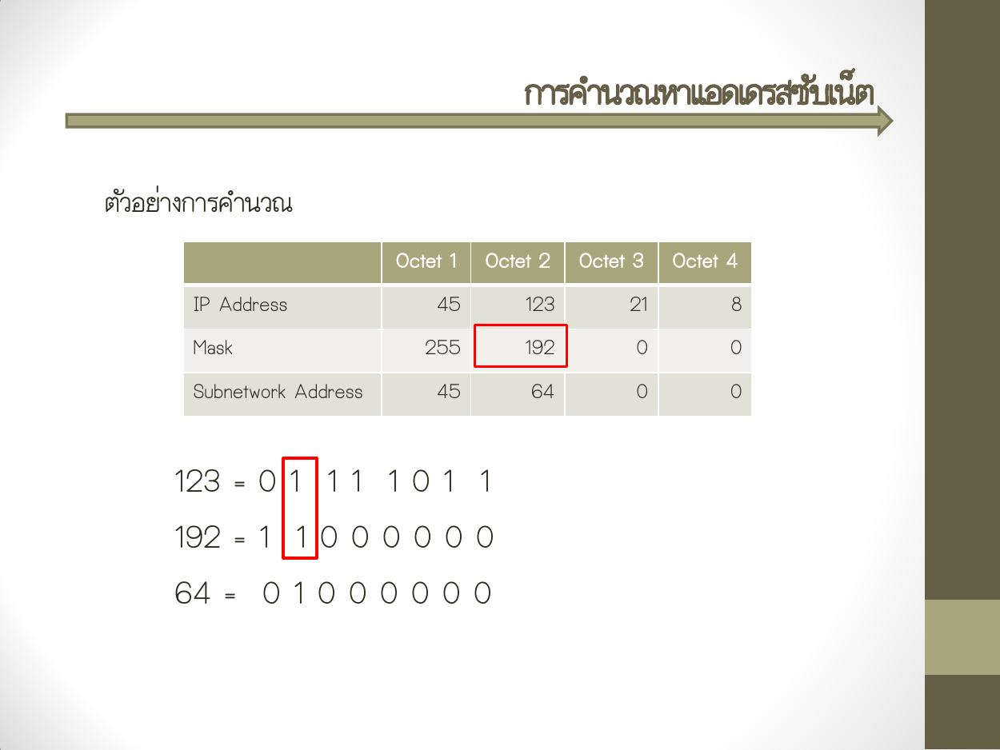
คลิกภาพเพื่อเปิดขยาย
การคานวณหาแอดเดรสซับเน็ต
ตัวอย่างการคานวณ
Octet 1 Octet 2 Octet 3 Octet 4
IP Address 45 123 21 8
Mask 255 192 0 0
Subnetwork Address 45 64 0 0
123 = 0 1 1 1 1 0 1 1
192 = 1 1 0 0 0 0 0 0
64 = 0 1 0 0 0 0 0 0ทบทวนภาษาไทย: IPv4, IPv6, CIDR และการแบ่ง SubnetIP Datagram, Fragmentation, NAT และ IPv6ARP, DHCP, ICMP และ Multicast Membershipติว Subnetting แบบละเอียด พร้อมแก้ค่าคลาดเคลื่อนในต้นฉบับ
กลับสารบัญ ↑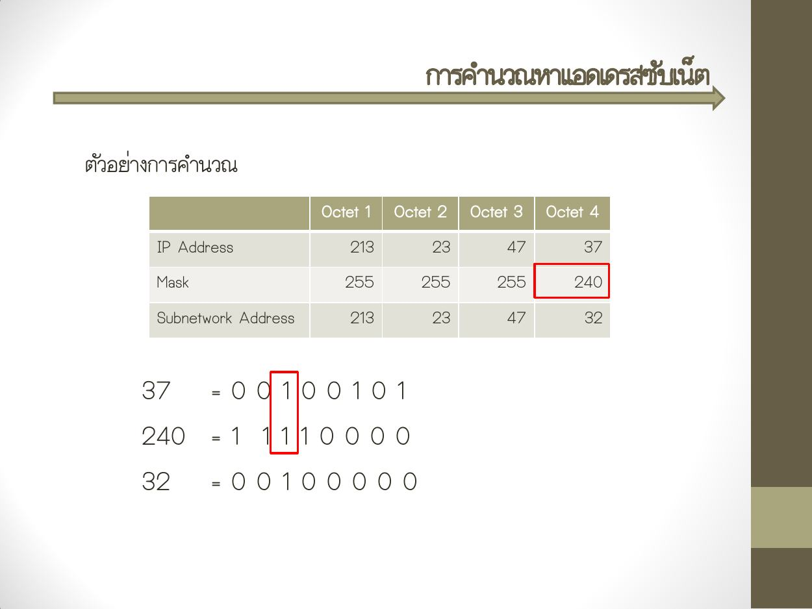
คลิกภาพเพื่อเปิดขยาย
การคานวณหาแอดเดรสซับเน็ต
ตัวอย่างการคานวณ
Octet 1 Octet 2 Octet 3 Octet 4
IP Address 213 23 47 37
Mask 255 255 255 240
Subnetwork Address 213 23 47 32
37 = 0 0 1 0 0 1 0 1
240 = 1 1 1 1 0 0 0 0
32 = 0 0 1 0 0 0 0 0ทบทวนภาษาไทย: IPv4, IPv6, CIDR และการแบ่ง SubnetIP Datagram, Fragmentation, NAT และ IPv6ARP, DHCP, ICMP และ Multicast Membershipติว Subnetting แบบละเอียด พร้อมแก้ค่าคลาดเคลื่อนในต้นฉบับ
กลับสารบัญ ↑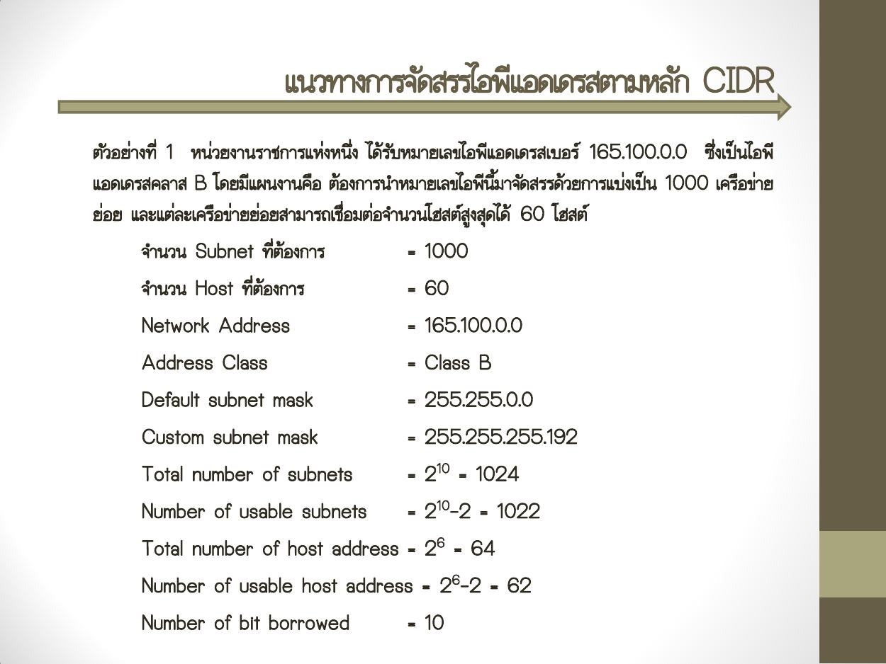
คลิกภาพเพื่อเปิดขยาย
แนวทางการจัดสรรไอพีแอดเดรสตามหลัก CIDR
ตัวอย่างที่ 1 หน่วยงานราชการแห่งหนึ่ง ได้รับหมายเลขไอพีแอดเดรสเบอร์ 165.100.0.0 ซึ่งเป็นไอพี
แอดเดรสคลาส B โดยมีแผนงานคือ ต้องการนาหมายเลขไอพีนี้มาจัดสรรด้วยการแบ่งเป็น 1000 เครือข่าย
ย่อย และแต่ละเครือข่ายย่อยสามารถเชื่อมต่อจานวนโฮสต์สูงสุดได้ 60 โฮสต์
จานวน Subnet ที่ต้องการ = 1000
จานวน Host ที่ต้องการ = 60
Network Address = 165.100.0.0
Address Class = Class B
Default subnet mask = 255.255.0.0
Custom subnet mask = 255.255.255.192
Total number of subnets = 210 = 1024
Number of usable subnets = 210-2 = 1022
Total number of host address = 26 = 64
Number of usable host address = 26-2 = 62
Number of bit borrowed = 10ทบทวนภาษาไทย: IPv4, IPv6, CIDR และการแบ่ง SubnetIP Datagram, Fragmentation, NAT และ IPv6ARP, DHCP, ICMP และ Multicast Membershipติว Subnetting แบบละเอียด พร้อมแก้ค่าคลาดเคลื่อนในต้นฉบับ
กลับสารบัญ ↑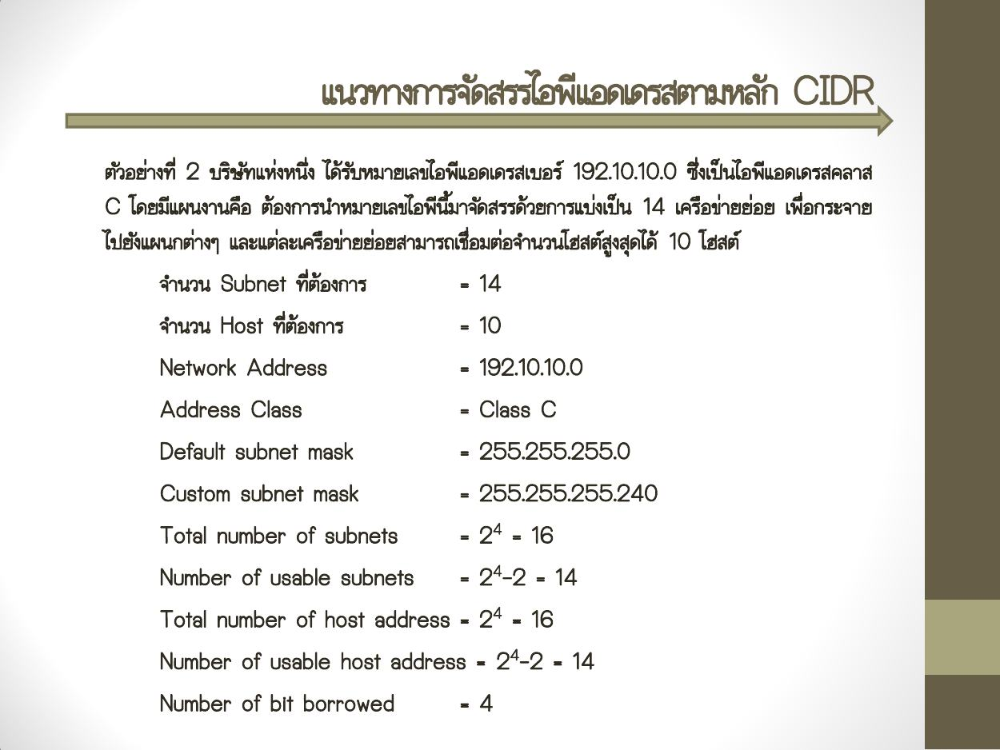
คลิกภาพเพื่อเปิดขยาย
แนวทางการจัดสรรไอพีแอดเดรสตามหลัก CIDR
ตัวอย่างที่ 2 บริษัทแห่งหนึ่ง ได้รับหมายเลขไอพีแอดเดรสเบอร์ 192.10.10.0 ซึ่งเป็นไอพีแอดเดรสคลาส
C โดยมีแผนงานคือ ต้องการนาหมายเลขไอพีนี้มาจัดสรรด้วยการแบ่งเป็น 14 เครือข่ายย่อย เพื่อกระจาย
ไปยังแผนกต่างๆ และแต่ละเครือข่ายย่อยสามารถเชื่อมต่อจานวนโฮสต์สูงสุดได้ 10 โฮสต์
จานวน Subnet ที่ต้องการ = 14
จานวน Host ที่ต้องการ = 10
Network Address = 192.10.10.0
Address Class = Class C
Default subnet mask = 255.255.255.0
Custom subnet mask = 255.255.255.240
Total number of subnets = 24 = 16
Number of usable subnets = 24-2 = 14
Total number of host address = 24 = 16
Number of usable host address = 24-2 = 14
Number of bit borrowed =4ทบทวนภาษาไทย: IPv4, IPv6, CIDR และการแบ่ง SubnetIP Datagram, Fragmentation, NAT และ IPv6ARP, DHCP, ICMP และ Multicast Membershipติว Subnetting แบบละเอียด พร้อมแก้ค่าคลาดเคลื่อนในต้นฉบับ
กลับสารบัญ ↑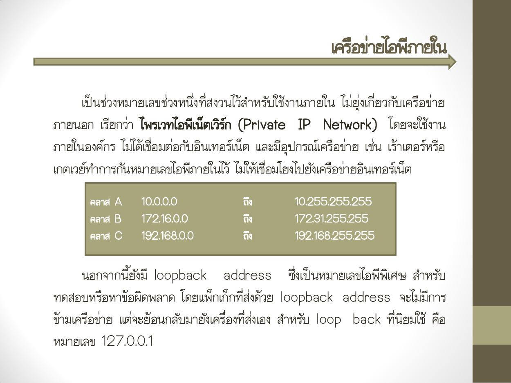
คลิกภาพเพื่อเปิดขยาย
เครือข่ายไอพีภายใน
เป็นช่วงหมายเลขช่วงหนึ่งที่สงวนไว้สาหรับใช้งานภายใน ไม่ยุ่งเกี่ยวกับเครือข่าย
ภายนอก เรียกว่า ไพรเวทไอพีเน็ตเวิร์ก (Private IP Network) โดยจะใช้งาน
ภายในองค์กร ไม่ได้เชื่อมต่อกับอินเทอร์เน็ต และมีอุปกรณ์เครือข่าย เช่น เร้าเตอร์หรือ
เกตเวย์ทาการกันหมายเลขไอพีภายในไว้ ไม่ให้เชื่อมโยงไปยังเครือข่ายอินเทอร์เน็ต
คลาส A 10.0.0.0 ถึง 10.255.255.255
คลาส B 172.16.0.0 ถึง 172.31.255.255
คลาส C 192.168.0.0 ถึง 192.168.255.255
นอกจากนี้ยังมี loopback address ซึ่งเป็นหมายเลขไอพีพิเศษ สาหรับ
ทดสอบหรือหาข้อผิดพลาด โดยแพ็กเก็กที่ส่งด้วย loopback address จะไม่มีการ
ข้ามเครือข่าย แต่จะย้อนกลับมายังเครื่องที่ส่งเอง สาหรับ loop back ที่นิยมใช้ คือ
หมายเลข 127.0.0.1ทบทวนภาษาไทย: IPv4, IPv6, CIDR และการแบ่ง SubnetIP Datagram, Fragmentation, NAT และ IPv6ARP, DHCP, ICMP และ Multicast Membershipติว Subnetting แบบละเอียด พร้อมแก้ค่าคลาดเคลื่อนในต้นฉบับ
กลับสารบัญ ↑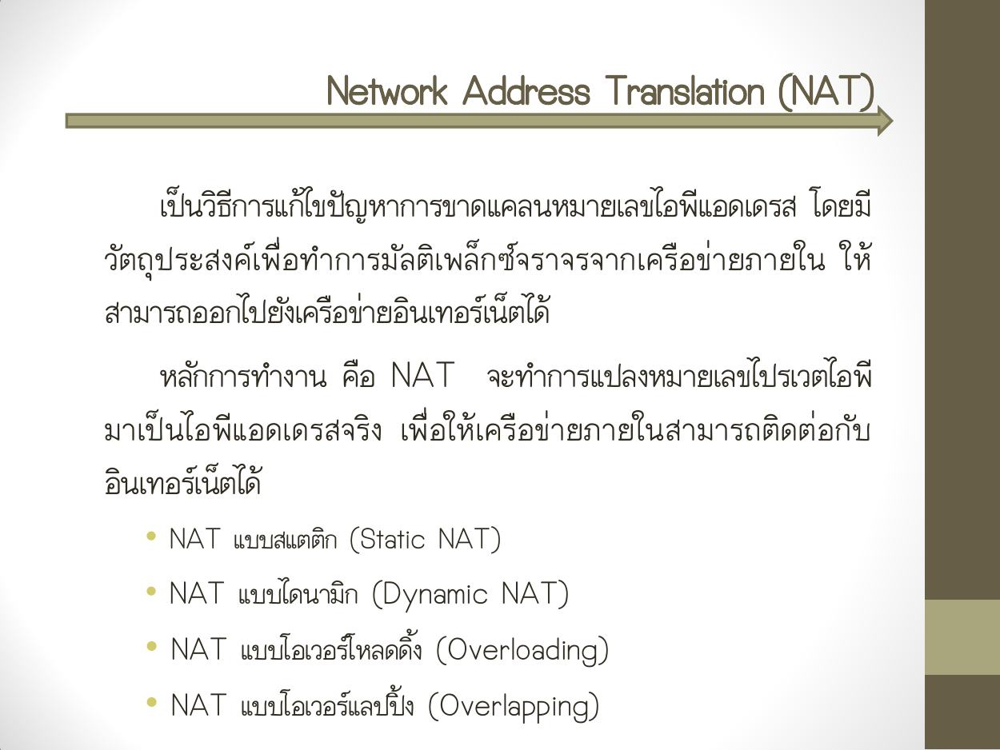
คลิกภาพเพื่อเปิดขยาย
Network Address Translation (NAT)
เป็นวิธีการแก้ไขปัญหาการขาดแคลนหมายเลขไอพีแอดเดรส โดยมี
วั ต ถุ ป ระสงค์ เ พื่ อ ท าการมั ล ติ เ พล็ ก ซ์ จ ราจรจากเครื อ ข่ า ยภายใน ให้
สามารถออกไปยังเครือข่ายอินเทอร์เน็ตได้
หลักการทางาน คือ NAT จะทาการแปลงหมายเลขไปรเวตไอพี
มาเป็ น ไอพี แ อดเดรสจริ ง เพื่ อ ให้ เ ครื อ ข่ า ยภายในสามารถติ ด ต่ อ กั บ
อินเทอร์เน็ตได้
• NAT แบบสแตติก (Static NAT)
• NAT แบบไดนามิก (Dynamic NAT)
• NAT แบบโอเวอร์โหลดดิ้ง (Overloading)
• NAT แบบโอเวอร์แลปปิ้ง (Overlapping)ทบทวนภาษาไทย: IPv4, IPv6, CIDR และการแบ่ง SubnetIP Datagram, Fragmentation, NAT และ IPv6ARP, DHCP, ICMP และ Multicast Membershipติว Subnetting แบบละเอียด พร้อมแก้ค่าคลาดเคลื่อนในต้นฉบับ
กลับสารบัญ ↑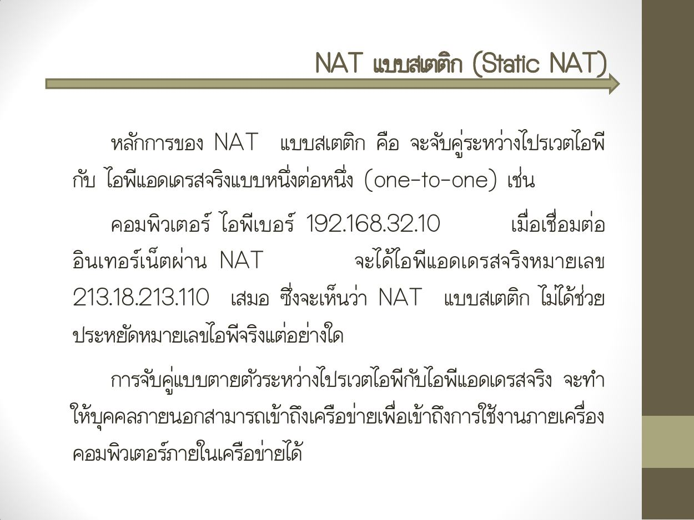
คลิกภาพเพื่อเปิดขยาย
NAT แบบสเตติก (Static NAT)
หลักการของ NAT แบบสเตติก คือ จะจับคู่ระหว่างไปรเวตไอพี
กับ ไอพีแอดเดรสจริงแบบหนึ่งต่อหนึ่ง (one-to-one) เช่น
คอมพิวเตอร์ ไอพีเบอร์ 192.168.32.10 เมื่อเชื่อมต่อ
อิน เทอร์เน็ตผ่าน NAT จะได้ไอพี แอดเดรสจริงหมายเลข
213.18.213.110 เสมอ ซึ่งจะเห็นว่า NAT แบบสเตติก ไม่ได้ช่วย
ประหยัดหมายเลขไอพีจริงแต่อย่างใด
การจับคู่แบบตายตัวระหว่างไปรเวตไอพีกับไอพีแอดเดรสจริง จะทา
ให้บุคคลภายนอกสามารถเข้าถึงเครือข่ายเพื่อเข้าถึงการใช้งานภายเครื่อง
คอมพิวเตอร์ภายในเครือข่ายได้ทบทวนภาษาไทย: IPv4, IPv6, CIDR และการแบ่ง SubnetIP Datagram, Fragmentation, NAT และ IPv6ARP, DHCP, ICMP และ Multicast Membershipติว Subnetting แบบละเอียด พร้อมแก้ค่าคลาดเคลื่อนในต้นฉบับ
กลับสารบัญ ↑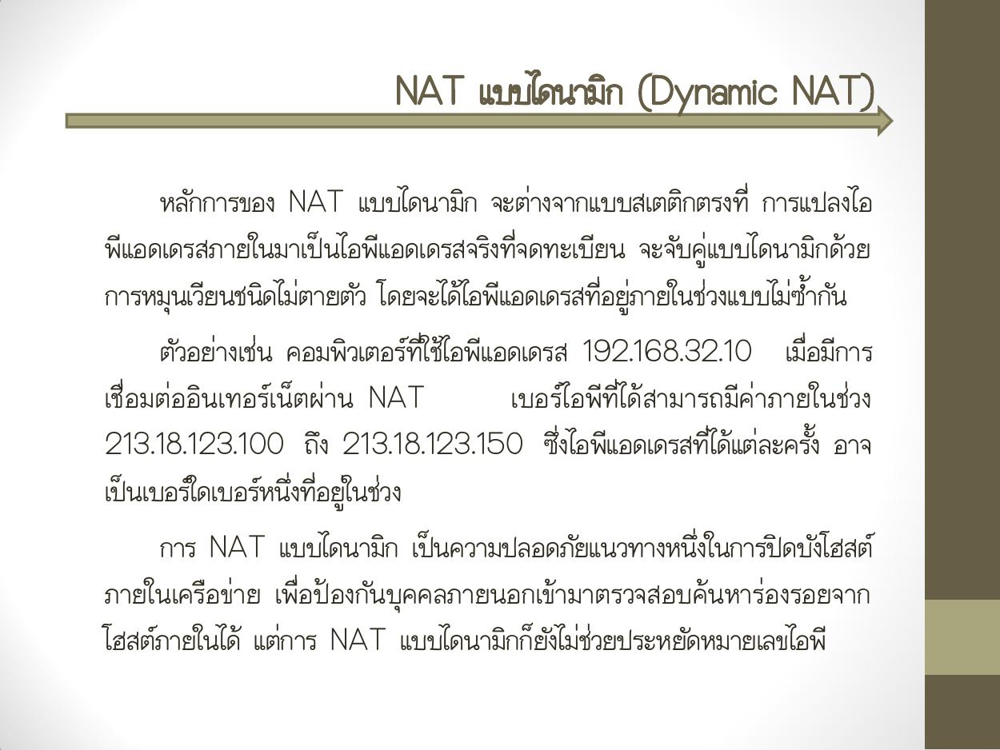
คลิกภาพเพื่อเปิดขยาย
NAT แบบไดนามิก (Dynamic NAT)
หลักการของ NAT แบบไดนามิก จะต่างจากแบบสเตติกตรงที่ การแปลงไอ
พีแอดเดรสภายในมาเป็นไอพีแอดเดรสจริงที่จดทะเบียน จะจับคู่แบบไดนามิกด้วย
การหมุนเวียนชนิดไม่ตายตัว โดยจะได้ไอพีแอดเดรสที่อยู่ภายในช่วงแบบไม่ซ้ากัน
ตัวอย่างเช่น คอมพิวเตอร์ที่ใช้ไอพีแอดเดรส 192.168.32.10 เมื่อมีการ
เชื่อมต่ออินเทอร์เน็ตผ่าน NAT เบอร์ไอพีที่ได้สามารถมีค่าภายในช่วง
213.18.123.100 ถึง 213.18.123.150 ซึ่งไอพีแอดเดรสที่ได้แต่ละครั้ง อาจ
เป็นเบอร์ใดเบอร์หนึ่งที่อยู่ในช่วง
การ NAT แบบไดนามิก เป็นความปลอดภัยแนวทางหนึ่งในการปิดบังโฮสต์
ภายในเครือข่าย เพื่อป้องกันบุคคลภายนอกเข้ามาตรวจสอบค้นหาร่องรอยจาก
โฮสต์ภายในได้ แต่การ NAT แบบไดนามิกก็ยังไม่ช่วยประหยัดหมายเลขไอพีทบทวนภาษาไทย: IPv4, IPv6, CIDR และการแบ่ง SubnetIP Datagram, Fragmentation, NAT และ IPv6ARP, DHCP, ICMP และ Multicast Membershipติว Subnetting แบบละเอียด พร้อมแก้ค่าคลาดเคลื่อนในต้นฉบับ
กลับสารบัญ ↑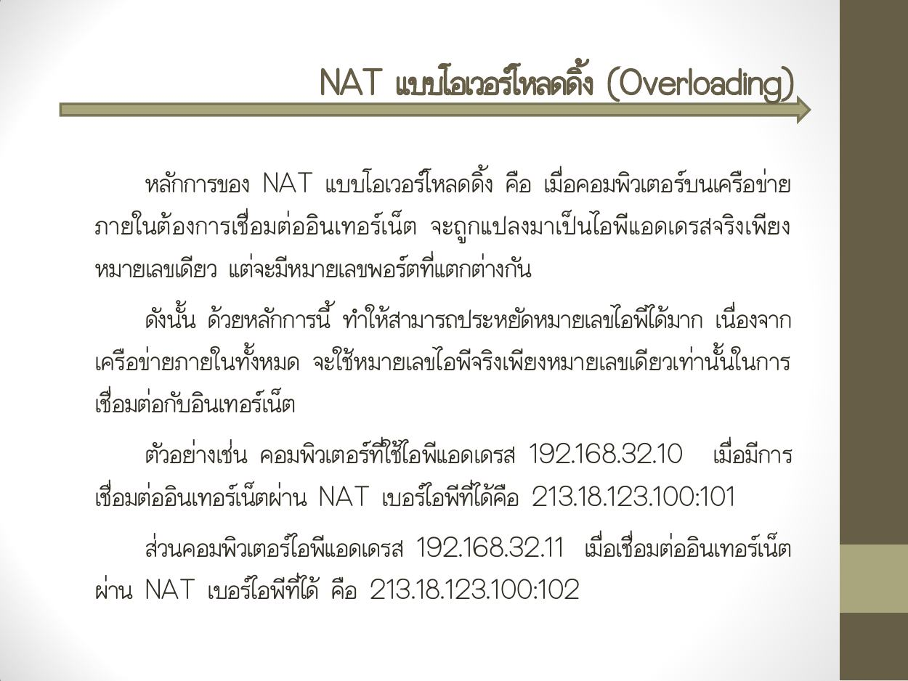
คลิกภาพเพื่อเปิดขยาย
NAT แบบโอเวอร์โหลดดิง้ (Overloading)
หลักการของ NAT แบบโอเวอร์โหลดดิ้ง คือ เมื่อคอมพิวเตอร์บนเครือข่าย
ภายในต้องการเชื่อมต่ออินเทอร์เน็ต จะถูกแปลงมาเป็นไอพีแอดเดรสจริงเพียง
หมายเลขเดียว แต่จะมีหมายเลขพอร์ตที่แตกต่างกัน
ดังนั้น ด้วยหลักการนี้ ทาให้สามารถประหยัดหมายเลขไอพีได้มาก เนื่องจาก
เครือข่ายภายในทั้งหมด จะใช้หมายเลขไอพีจริงเพียงหมายเลขเดียวเท่านั้นในการ
เชื่อมต่อกับอินเทอร์เน็ต
ตัวอย่างเช่น คอมพิวเตอร์ที่ใช้ไอพีแอดเดรส 192.168.32.10 เมื่อมีการ
เชื่อมต่ออินเทอร์เน็ตผ่าน NAT เบอร์ไอพีทไี่ ด้คือ 213.18.123.100:101
ส่วนคอมพิวเตอร์ไอพีแอดเดรส 192.168.32.11 เมื่อเชื่อมต่ออินเทอร์เน็ต
ผ่าน NAT เบอร์ไอพีที่ได้ คือ 213.18.123.100:102ทบทวนภาษาไทย: IPv4, IPv6, CIDR และการแบ่ง SubnetIP Datagram, Fragmentation, NAT และ IPv6ARP, DHCP, ICMP และ Multicast Membershipติว Subnetting แบบละเอียด พร้อมแก้ค่าคลาดเคลื่อนในต้นฉบับ
กลับสารบัญ ↑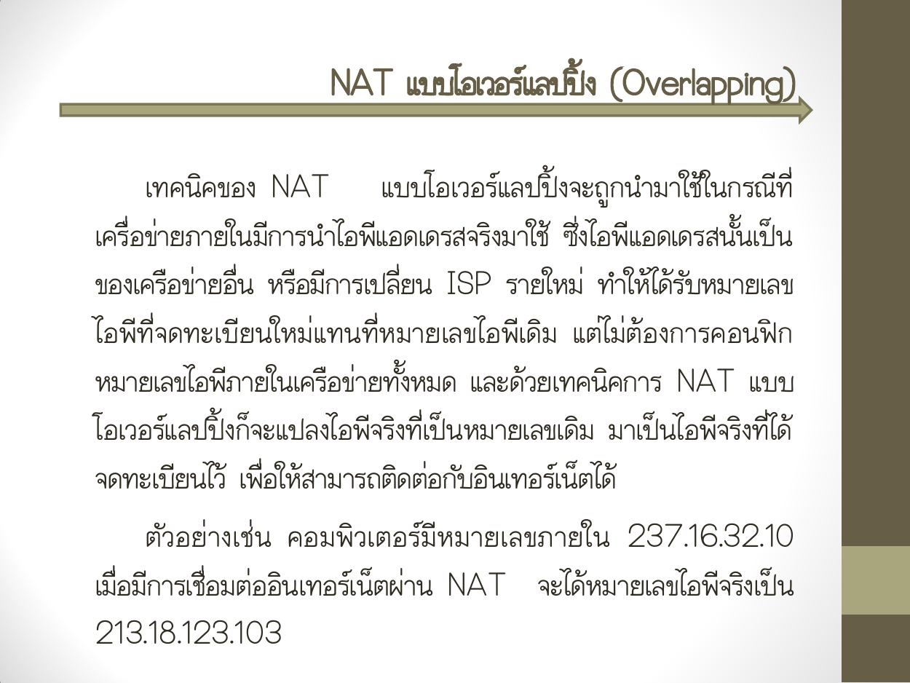
คลิกภาพเพื่อเปิดขยาย
NAT แบบโอเวอร์แลปปิง้ (Overlapping)
เทคนิคของ NAT แบบโอเวอร์แลปปิ้งจะถูกนามาใช้ในกรณีที่
เครื่อข่ายภายในมีการนาไอพีแอดเดรสจริงมาใช้ ซึ่งไอพีแอดเดรสนั้นเป็น
ของเครือข่ายอื่น หรือมีการเปลี่ยน ISP รายใหม่ ทาให้ได้รับหมายเลข
ไอพีที่จดทะเบียนใหม่แทนที่หมายเลขไอพีเดิม แต่ไม่ต้องการคอนฟิก
หมายเลขไอพีภายในเครือข่ายทั้งหมด และด้วยเทคนิคการ NAT แบบ
โอเวอร์แลปปิ้งก็จะแปลงไอพีจริงที่เป็นหมายเลขเดิม มาเป็นไอพีจริงที่ได้
จดทะเบียนไว้ เพื่อให้สามารถติดต่อกับอินเทอร์เน็ตได้
ตัวอย่างเช่น คอมพิ ว เตอร์มี ห มายเลขภายใน 237.16.32.10
เมื่อมีการเชื่อมต่ออินเทอร์เน็ตผ่าน NAT จะได้หมายเลขไอพีจริงเป็น
213.18.123.103ทบทวนภาษาไทย: IPv4, IPv6, CIDR และการแบ่ง SubnetIP Datagram, Fragmentation, NAT และ IPv6ARP, DHCP, ICMP และ Multicast Membershipติว Subnetting แบบละเอียด พร้อมแก้ค่าคลาดเคลื่อนในต้นฉบับ
กลับสารบัญ ↑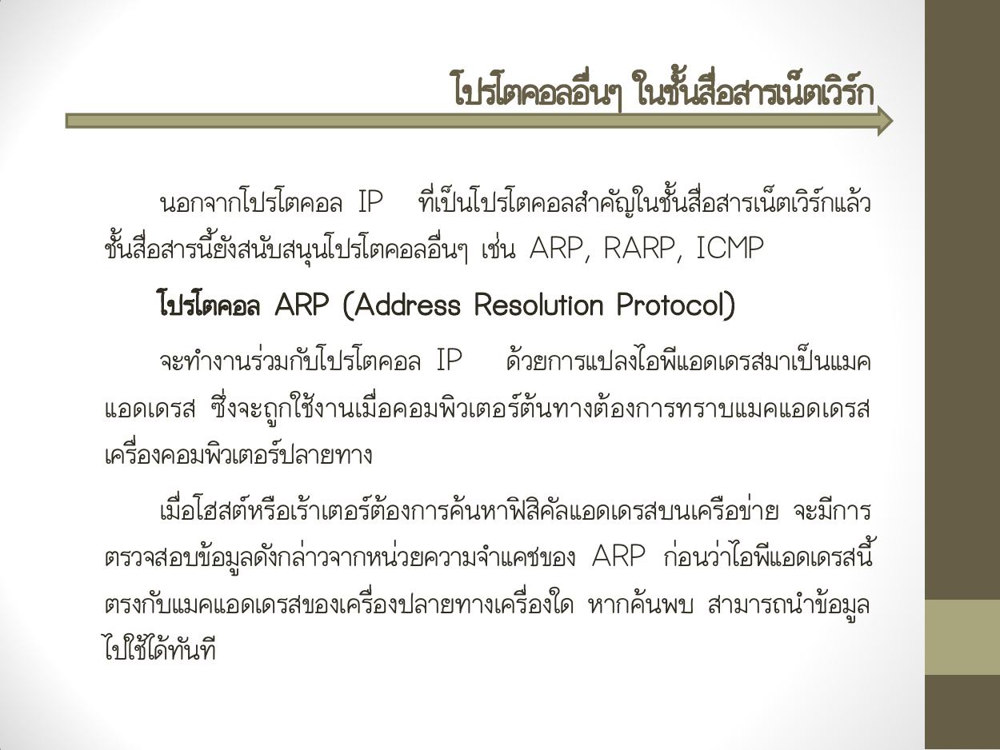
คลิกภาพเพื่อเปิดขยาย
โปรโตคอลอืน่ ๆ ในชั้นสือ่ สารเน็ตเวิร์ก
นอกจากโปรโตคอล IP ที่เป็นโปรโตคอลสาคัญในชั้นสื่อสารเน็ตเวิร์กแล้ว
ชั้นสื่อสารนี้ยังสนับสนุนโปรโตคอลอื่นๆ เช่น ARP, RARP, ICMP
โปรโตคอล ARP (Address Resolution Protocol)
จะทางานร่วมกับโปรโตคอล IP ด้วยการแปลงไอพีแอดเดรสมาเป็นแมค
แอดเดรส ซึ่งจะถูกใช้งานเมื่อคอมพิวเตอร์ต้นทางต้องการทราบแมคแอดเดรส
เครื่องคอมพิวเตอร์ปลายทาง
เมื่อโฮสต์หรือเร้าเตอร์ต้องการค้นหาฟิสิคัลแอดเดรสบนเครือข่าย จะมีการ
ตรวจสอบข้อมูลดังกล่าวจากหน่วยความจาแคชของ ARP ก่อนว่าไอพีแอดเดรสนี้
ตรงกับแมคแอดเดรสของเครื่องปลายทางเครื่องใด หากค้นพบ สามารถนาข้อมูล
ไปใช้ได้ทันทีทบทวนภาษาไทย: IPv4, IPv6, CIDR และการแบ่ง SubnetIP Datagram, Fragmentation, NAT และ IPv6ARP, DHCP, ICMP และ Multicast Membershipติว Subnetting แบบละเอียด พร้อมแก้ค่าคลาดเคลื่อนในต้นฉบับ
กลับสารบัญ ↑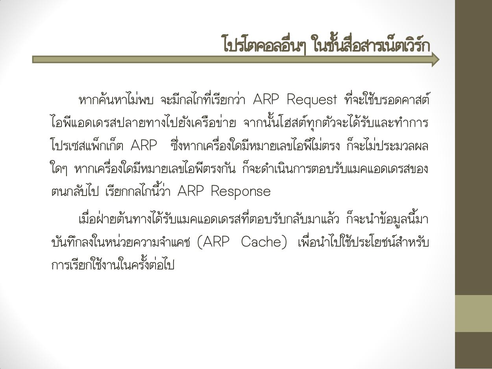
คลิกภาพเพื่อเปิดขยาย
โปรโตคอลอืน่ ๆ ในชั้นสือ่ สารเน็ตเวิร์ก
หากค้นหาไม่พบ จะมีกลไกที่เรียกว่า ARP Request ที่จะใช้บรอดคาสต์
ไอพีแอดเดรสปลายทางไปยังเครือข่าย จากนั้นโฮสต์ทุกตัวจะได้รับและทาการ
โปรเซสแพ็กเก็ต ARP ซึ่งหากเครื่องใดมีหมายเลขไอพีไม่ตรง ก็จะไม่ประมวลผล
ใดๆ หากเครื่องใดมีหมายเลขไอพีตรงกัน ก็จะดาเนินการตอบรับแมคแอดเดรสของ
ตนกลับไป เรียกกลไกนี้ว่า ARP Response
เมื่อฝ่ายต้นทางได้รับแมคแอดเดรสที่ตอบรับกลับมาแล้ว ก็จะนาข้อมูลนี้มา
บันทึกลงในหน่วยความจาแคช (ARP Cache) เพื่อนาไปใช้ประโยชน์สาหรับ
การเรียกใช้งานในครั้งต่อไปทบทวนภาษาไทย: IPv4, IPv6, CIDR และการแบ่ง SubnetIP Datagram, Fragmentation, NAT และ IPv6ARP, DHCP, ICMP และ Multicast Membershipติว Subnetting แบบละเอียด พร้อมแก้ค่าคลาดเคลื่อนในต้นฉบับ
กลับสารบัญ ↑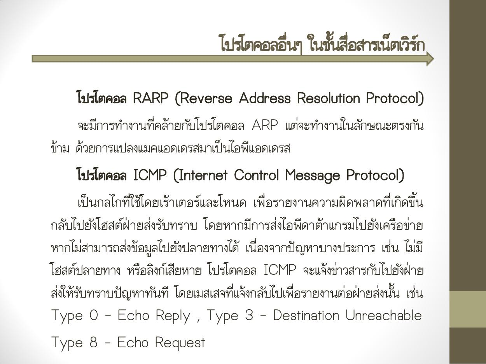
คลิกภาพเพื่อเปิดขยาย
โปรโตคอลอืน่ ๆ ในชั้นสือ่ สารเน็ตเวิร์ก
โปรโตคอล RARP (Reverse Address Resolution Protocol)
จะมีการทางานที่คล้ายกับโปรโตคอล ARP แต่จะทางานในลักษณะตรงกัน
ข้าม ด้วยการแปลงแมคแอดเดรสมาเป็นไอพีแอดเดรส
โปรโตคอล ICMP (Internet Control Message Protocol)
เป็นกลไกที่ใช้โดยเร้าเตอร์และโหนด เพื่อรายงานความผิดพลาดที่เกิดขึ้น
กลับไปยังโฮสต์ฝ่ายส่งรับทราบ โดยหากมีการส่งไอพีดาต้าแกรมไปยังเครือข่าย
หากไม่สามารถส่งข้อมูลไปยังปลายทางได้ เนื่องจากปัญหาบางประการ เช่น ไม่มี
โฮสต์ปลายทาง หรือลิงก์เสียหาย โปรโตคอล ICMP จะแจ้งข่าวสารกับไปยังฝ่าย
ส่งให้รับทราบปัญหาทันที โดยเมสเสจที่แจ้งกลับไปเพื่อรายงานต่อฝ่ายส่งนั้น เช่น
Type 0 – Echo Reply , Type 3 – Destination Unreachable
Type 8 – Echo Requestทบทวนภาษาไทย: IPv4, IPv6, CIDR และการแบ่ง SubnetIP Datagram, Fragmentation, NAT และ IPv6ARP, DHCP, ICMP และ Multicast Membershipติว Subnetting แบบละเอียด พร้อมแก้ค่าคลาดเคลื่อนในต้นฉบับ
กลับสารบัญ ↑ไม่พบหัวข้อที่ตรงกับคำค้น ลองล้างตัวกรองหรือใช้คำสั้นลง